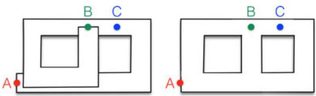
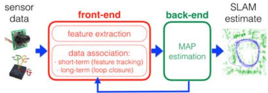
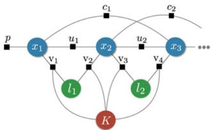
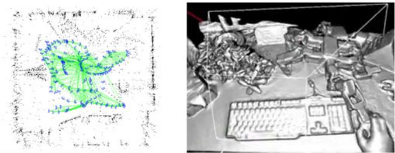
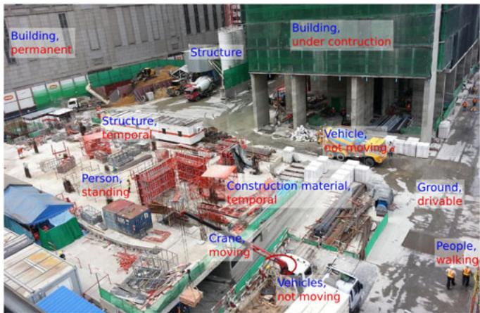
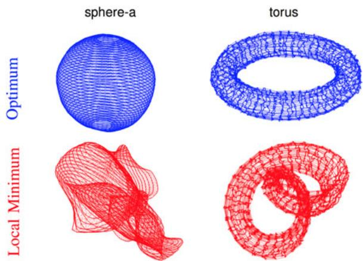
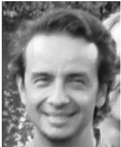

<!DOCTYPE html>
<html lang="zh-CN">
<head>
<meta charset="UTF-8">
<meta name="viewport" content="width=device-width, initial-scale=1">
<title>Past, Present, and Future of Simultaneous Localization and Mapping: Toward the Robust-Perception Age — SLAM 论文原文</title>
<style>
  :root{--paper:#FBF9F5;--ink:#2E2A26;--ink2:#8A8178;--terra:#CC785C;--rule:#E4DCD0;}
  *{box-sizing:border-box;}
  body{margin:0;background:var(--paper);color:var(--ink);
    font-family:Inter,-apple-system,BlinkMacSystemFont,"PingFang SC","Hiragino Sans GB","Microsoft YaHei",sans-serif;
    line-height:1.85;font-size:16px;}
  .bar{position:sticky;top:0;z-index:5;background:rgba(251,249,245,.94);backdrop-filter:blur(8px);
    border-bottom:1px solid var(--rule);padding:10px 18px;display:flex;gap:16px;flex-wrap:wrap;font-size:13.5px;}
  .bar a{color:var(--terra);text-decoration:none;}
  .bar a:hover{text-decoration:underline;}
  .bar .sp{flex:1;}
  main{max-width:820px;margin:0 auto;padding:28px 20px 80px;}
  h1,h2,h3,h4{font-family:"Noto Serif SC","Songti SC",Georgia,serif;line-height:1.35;}
  h1{font-size:26px;margin:.4em 0 .8em;}
  h2{font-size:21px;margin:1.8em 0 .6em;padding-top:.4em;border-top:1px solid var(--rule);}
  h3{font-size:17.5px;margin:1.4em 0 .5em;}
  p{margin:.85em 0;}
  img{max-width:100%;height:auto;display:block;margin:1.2em auto;border:1px solid var(--rule);border-radius:6px;}
  table{border-collapse:collapse;width:100%;margin:1.2em 0;font-size:14.5px;display:block;overflow-x:auto;}
  th,td{border:1px solid var(--rule);padding:6px 10px;text-align:left;}
  th{background:#F4EFE7;}
  code{background:#F4EFE7;padding:.1em .35em;border-radius:4px;font-size:.9em;}
  pre{background:#F4EFE7;padding:12px;border-radius:8px;overflow-x:auto;}
  pre code{background:none;padding:0;}
  blockquote{border-left:3px solid var(--rule);margin:1em 0;padding:.2em 0 .2em 14px;color:var(--ink2);}
  math{font-size:1.06em;}
  .math-block{overflow-x:auto;margin:1.3em 0;text-align:center;}
  .math-raw{background:#FDF3F0;border-left:3px solid var(--terra);padding:8px 12px;font-size:13px;overflow-x:auto;}
  .ocrmiss{background:#FDE8E2;color:#B3654B;border-radius:3px;padding:0 2px;cursor:help;}
  .banner{background:#FDF3F0;border:1px solid #F0D3C9;border-radius:8px;padding:10px 14px;
    font-size:13.5px;color:#8A5A46;margin:0 0 18px;}
  .foot{margin-top:48px;padding-top:18px;border-top:1px solid var(--rule);font-size:13px;color:var(--ink2);}
</style>
</head>
<body>
<div class="bar">
  <a href="../../course/index.html">← 课程馆</a>
  <a href="../index.html">论文原文索引</a>
  <span class="sp"></span>
  <a href="../2016_Past__Present__and_Future_of_Simultaneous_Localization_a.md" download>下载 .md 源文件</a>
</div>
<main>

<h1>Past, Present, and Future of Simultaneous Localization and Mapping: Toward the Robust-Perception Age</h1>
<p>Cesar Cadena, Luca Carlone, Henry Carrillo, Yasir Latif, Davide Scaramuzza, Jose Neira, Ian Reid,´ and John J. Leonard</p>
<p>Abstract—Simultaneous localization and mapping (SLAM) consists in the concurrent construction of a model of the environment (the map), and the estimation of the state of the robot moving within it. The SLAM community has made astonishing progress over the last 30 years, enabling large-scale real-world applications and witnessing a steady transition of this technology to industry. We survey the current state of SLAM and consider future directions. We start by presenting what is now the de-facto standard formulation for SLAM. We then review related work, covering a broad set oftopics including robustness and scalability in long-term mapping, metric and semantic representations for mapping, theoretical performance guarantees, active SLAM and exploration, and other new frontiers. This paper simultaneously serves as a position paper and tutorial to those who are users of SLAM. By looking at the published research with a critical eye, we delineate open challenges and new research issues, that still deserve careful scientific investigation. The paper also contains the authors’ take on two questions that often animate discussions during robotics conferences: Do robots need SLAM? and Is SLAM solved?</p>
<p>Index Terms—Factor graphs, localization, mapping, maximum a posteriori estimation, perception, robots, sensing, simultaneous localization and mapping (SLAM).</p>
<p>Manuscript received July 29, 2016; revised October 31, 2016; accepted October 31, 2016. Date of current version December 2, 2016. This paper was recommended for publication by Associate Editor J. M. Porta and Editor C. Torras upon evaluation of the reviewers’ comments. This work was supported in part by the following: Grant MINECO-FEDER DPI2015-68905-P, Grant Grupo DGA T04-FSE; ARC Grants DP130104413, Grant CE140100016 and Grant FL130100102; NCCR Robotics; Grant PUJ 6601; EU-FP7-ICT-Project TRADR 609763, Grant EU-H2020-688652, and Grant SERI-15.0284. This paper was presented in part at the workshop “The problem of mobile sensors: Setting future goals and indicators of progress for SLAM” at the Robotics: Science and System Conference, Rome, Italy, July 2015. Additional material for this paper, including an extended list of references (bibtex) and a table of pointers to online datasets for SLAM, can be found at https://slam-future.github.io/</p>
<h2>I. INTRODUCTION</h2>
<p>LAM comprises the simultaneous estimation of the state of a robot equipped with on-board sensors and the construction of a model (the map) of the environment that the sensors are perceiving. In simple instances, the robot state is described by its pose (position and orientation), although other quantities may be included in the state, such as robot velocity, sensor biases, and calibration parameters. The map, on the other hand, is a representation of aspects of interest (e.g., position of landmarks, obstacles) describing the environment in which the robot operates.</p>
<p>The need to use a map of the environment is twofold. First, the map is often required to support other tasks; for instance, a map can inform path planning or provide an intuitive visualization for a human operator. Second, the map allows limiting the error committed in estimating the state of the robot. In the absence of a map, dead-reckoning would quickly drift over time; on the other hand, using a map, e.g., a set of distinguishable landmarks, the robot can “reset” its localization error by revisiting known areas (so-called loop closure). Therefore, SLAM finds applications in all scenarios in which a prior map is not available and needs to be built.</p>
<p>In some robotics applications, the location of a set of landmarks is known a priori. For instance, a robot operating on a factory floor can be provided with a manually built map of artificial beacons in the environment. Another example is the case in which the robot has access to GPS (the GPS satellites can be considered as moving beacons at known locations). In such scenarios, SLAM may not be required if localization can be done reliably with respect to the known landmarks.</p>
<p>The popularity of the SLAM problem is connected with the emergence of indoor applications of mobile robotics. Indoor operation rules out the use of GPS to bound the localization error; furthermore, SLAM provides an appealing alternative to user-built maps, showing that robot operation is possible in the absence of an ad hoc localization infrastructure.</p>
<p>A thorough historical review of the first 20 years of the SLAM problem is given by Durrant–Whyte and Bailey in two surveys [8], [70]. These mainly cover what we call the classical age (1986–2004); the classical age saw the introduction of the main probabilistic formulations for SLAM, including approaches based on extended Kalman filters (EKF), Rao–Blackwellized particle filters, and maximum likelihood estimation; moreover, it delineated the basic challenges connected to efficiency and robust data association. Two other excellent references describing the three main SLAM formulations of the classical age are the book of Thrun, Burgard, and Fox [240] and the chapter of Stachniss et al. [234, Ch. 46]. The subsequent period is what we call the algorithmic-analysis age (2004–2015), and is partially covered by Dissanayake et al. in [65]. The algorithmic analysis period saw the study of fundamental properties of SLAM, including observability, convergence, and consistency. In this period, the key role of sparsity toward efficient SLAM solvers was also understood, and the main open-source SLAM libraries were developed.</p>
<p>TABLE I<br />
SURVEYING THE SURVEYS AND TUTORIALS</p>
<table><tr><td>Year</td><td>Topic</td><td>Reference</td></tr><tr><td>2006</td><td>Probabilistic approaches and data association</td><td>Durrant-Whyte and Bailey [8], [70]</td></tr><tr><td>2008</td><td>Filtering approaches</td><td>Aulinas et al. [7]</td></tr><tr><td>2011</td><td>SLAM back end</td><td>Grisetti et al. [98]</td></tr><tr><td>2011</td><td>Observability, consistency and convergence</td><td>Dissanayake et al. [65]</td></tr><tr><td>2012</td><td>Visual odometry</td><td>Scaramuzza and Fraundofer [86], [218]</td></tr><tr><td>2016</td><td>Multi robot SLAM</td><td>Saeedi et al. [216]</td></tr><tr><td>2016</td><td>Visual place recognition</td><td>Lowry et al. [160]</td></tr><tr><td>2016</td><td>SLAM in the Handbook of Robotics</td><td>Stachniss et al. [234, Ch. 46]</td></tr><tr><td>2016</td><td>Theoretical aspects</td><td>Huang and Dissanayake [110]</td></tr></table>

<p>We review the main SLAM surveys to date in Table I, observing that most recent surveys only cover specific aspects or subfields of SLAM. The popularity of SLAM in the last 30 years is not surprising if one thinks about the manifold aspects that SLAM involves. At the lower level (called the front end in Section II), SLAM naturally intersects other research fields such as computer vision and signal processing; at the higher level (that we later call the back end), SLAM is an appealing mix of geometry, graph theory, optimization, and probabilistic estimation. Finally, a SLAM expert has to deal with practical aspects ranging from sensor calibration to system integration.</p>
<p>This paper gives a broad overview of the current state of SLAM, and offers the perspective of part of the community on the open problems and future directions for the SLAM research. Our main focus is on metric and semantic SLAM, and we refer the reader to the recent survey by Lowry et al. [160], which provides a comprehensive review of vision-based place recognition and topological SLAM.</p>
<p>Before delving into this paper, we first discuss two questions that often animate discussions during robotics conferences: do autonomous robots need SLAM? and is SLAM solved as an academic research endeavor? We will revisit these questions at the end of the manuscript.</p>
<p>Answering the question “Do autonomous robots really need SLAM?” requires understanding what makes SLAM unique. SLAM aims at building a globally consistent representation of the environment, leveraging both ego-motion measurements and loop closures. The keyword here is “loop closure”: if we sacrifice loop closures, SLAM reduces to odometry. In early applications, odometry was obtained by integrating wheel encoders. The pose estimate obtained from wheel odometry quickly drifts, making the estimate unusable after few meters [128, Ch. 6]; this was one of the main thrusts behind the development of SLAM: the observation of external landmarks is useful to reduce the trajectory drift and possibly correct it [185]. However, more recent odometry algorithms are based on visual and inertial information, and have very small drift (&lt;0.5% of the trajectory length [83]). Hence the question becomes legitimate: do we really need SLAM? Our answer is three-fold.</p>
<p><br />
Fig. 1. Left: map built from odometry. The map is homotopic to a long corridor that goes from the starting position A to the final position B. Points that are close in reality (e.g., B and C) may be arbitrarily far in the odometric map. Right: map build from SLAM. By leveraging loop closures, SLAM estimates the actual topology of the environment, and “discovers” shortcuts in the map.</p>
<p>First of all, we observe that the SLAM research done over the last decade has itself produced the visual-inertial odometry algorithms that currently represent the state-of-the-art, e.g., [163], [175]; in this sense, visual-inertial navigation (VIN) is SLAM: VIN can be considered a reduced SLAM system, in which the loop closure (or place recognition) module is disabled. More generally, SLAM has directly led to the study of sensor fusion under more challenging setups (i.e., no GPS, low quality sensors) than previously considered in other literature (e.g., inertial navigation in aerospace engineering).</p>
<p>The second answer regards the true topology of the environment. A robot performing odometry and neglecting loop closures interprets the world as an “infinite corridor” (see Fig. 1-left) in which the robot keeps exploring new areas indefinitely. A loop closure event informs the robot that this “corridor” keeps intersecting itself (see Fig. 1-right). The advantage of loop closure now becomes clear: by finding loop closures, the robot understands the real topology of the environment, and is able to find shortcuts between locations (e.g., point B and C in the map). Therefore, if getting the right topology of the environment is one of the merits of SLAM, why not simply drop the metric information and just do place recognition? The answer is simple: the metric information makes place recognition much simpler and more robust; the metric reconstruction informs the robot about loop closure opportunities and allows discarding spurious loop closures [150]. Therefore, while SLAM might be redundant in principle (an oracle place recognition module would suffice for topological mapping), SLAM offers a natural defense against wrong data association and perceptual aliasing, where similarly looking scenes, corresponding to distinct locations in the environment, would deceive place recognition. In this sense, the SLAM map provides a way to predict and validate future measurements: we believe that this mechanism is key to robust operation.</p>
<p>The third answer is that SLAM is needed for many applications that, either implicitly or explicitly, do require a globally consistent map. For instance, in many military and civilian applications, the goal of the robot is to explore an environment and report a map to the human operator, ensuring that full coverage of the environment has been obtained. Another example is the case in which the robot has to perform structural inspection (of a building, bridge, etc.); also in this case, a globally consistent three-dimensional (3-D) reconstruction is a requirement for successful operation.</p>
<p>This question of “is SLAM solved?” is often asked within the robotics community, c.f., [88]. This question is difficult to answer because SLAM has become such a broad topic that the question is well posed only for a given robot/environment/performance combination. In particular, one can evaluate the maturity of the SLAM problem once the following aspects are specified as follows:</p>
<p>1) Robot: type of motion (e.g., dynamics, maximum speed), available sensors (e.g., resolution, sampling rate), available computational resources.</p>
<p>2) Environment: planar or 3-D, presence of natural or artificial landmarks, amount of dynamic elements, amount of symmetry, and risk of perceptual aliasing. Note that many of these aspects actually depend on the sensorenvironment pair: for instance, two rooms may look identical for a 2-D laser scanner (perceptual aliasing), while a camera may discern them from appearance cues.</p>
<p>3) Performance Requirements: desired accuracy in the estimation of the state of the robot, accuracy, and type of representation of the environment (e.g., landmark-based or dense), success rate (percentage of tests in which the accuracy bounds are met), estimation latency, maximum operation time, maximum size of the mapped area.</p>
<p>For instance, mapping a 2-D indoor environment with a robot equipped with wheel encoders and a laser scanner, with sufficient accuracy (&lt;10cm) and sufficient robustness (say, low failure rate), can be considered largely solved (an example of industrial system performing SLAM is the Kuka Navigation Solution [145]). Similarly, vision-based SLAM with slowlymoving robots (e.g., Mars rovers [166], domestic robots [2]), and visual-inertial odometry [95] can be considered mature research fields.</p>
<p>On the other hand, other robot/environment/performance combinations still deserve a large amount of fundamental research. Current SLAM algorithms can be easily induced to fail when either the motion of the robot or the environment are too challenging (e.g., fast robot dynamics, highly dynamic environments); similarly, SLAM algorithms are often unable to face strict performance requirements, e.g., high rate estimation for fast closed-loop control. This survey will provide a comprehensive overview of these open problems, among others.</p>
<p>In this paper, we argue that we are entering in a third era for SLAM, the robust-perception age, which is characterized by the following key requirements:</p>
<p>1) Robust Performance: the SLAM system operates with low failure rate for an extended period of time in a broad set of environments; the system includes fail-safe mechanisms and has self-tuning capabilities<sup>1</sup> in that it can adapt the selection of the system parameters to the scenario.</p>
<p>2) High-Level Understanding: the SLAM system goes beyond basic geometry reconstruction to obtain a high-level understanding of the environment (e.g., high-level geometry, semantics, physics, affordances).</p>
<p>3) Resource Awareness: the SLAM system is tailored to the available sensing and computational resources, and provides means to adjust the computation load depending on the available resources.</p>
<p><br />
Fig. 2. Front end and back end in a typical SLAM system. The back end can provide feedback to the front end for loop closure detection and verification.</p>
<p>4) Task-Driven Perception: the SLAM system is able to select relevant perceptual information and filter out irrelevant sensor data, in order to support the task, the robot has to perform; moreover, the SLAM system produces adaptive map representations, whose complexity may vary depending on the task at hand.</p>
<h2>A. Paper organization</h2>
<p>This paper starts by presenting a standard formulation and architecture for SLAM (see Section II). Section III tackles robustness in life-long SLAM. Section IV deals with scalability. Section V discusses how to represent the geometry of the environment. Section VI extends the question of the environment representation to the modeling of semantic information. Section VII provides an overview of the current accomplishments on the theoretical aspects of SLAM. Section VIII broadens the discussion and reviews the active SLAM problem in which decision making is used to improve the quality of the SLAM results. Section IX provides an overview of recent trends in SLAM, including the use of unconventional sensors and deep learning. Section X provides final remarks. Throughout the paper, we provide many pointers to related work outside the robotics community. Despite its unique traits, SLAM is related to problems addressed in computer vision, computer graphics, and control theory, and cross-fertilization among these fields is a necessary condition to enable fast progress.</p>
<p>For the nonexpert reader, we recommend to read Durrant– Whyte and Bailey’s SLAM tutorials [8], [70] before delving in this position paper. The more experienced researchers can jump directly to the section of interest, where they will find a selfcontained overview of the state-of-the-art and open problems.</p>
<h2>II. ANATOMY OF A MODERN SLAM SYSTEM</h2>
<p>The architecture of a SLAM system includes two main components: the front end and the back end. The front end abstracts sensor data into models that are amenable for estimation, while the back end performs inference on the abstracted data produced by the front end. This architecture is summarized in Fig. 2. We review both components, starting from the back end.</p>
<h2>A. Maximum a Posteriori (MAP) Estimation and the SLAM Back End</h2>
<p>The current de-facto standard formulation of SLAM has its origins in the seminal paper of Lu and Milios [161], followed by the work of Gutmann and Konolige [102]. Since then, numerous approaches have improved the efficiency and robustness of the optimization underlying the problem [64], [82], [101], [125], [192], [241]. All these approaches formulate SLAM as a maximum a posteriori estimation problem, and often use the formalism of factor graphs [143] to reason about the interdependence among variables.</p>
<p>Assume that we want to estimate an unknown variable <math xmlns="http://www.w3.org/1998/Math/MathML" display="inline"><mrow><mi>x</mi><mi>;</mi></mrow></math> as mentioned before, in SLAM the variable X typically includes the trajectory of the robot (as a discrete set of poses) and the position of landmarks in the environment. We are given a set of measurements <math xmlns="http://www.w3.org/1998/Math/MathML" display="inline"><mrow><mi>Z</mi><mo>&#x0003D;</mo><mo stretchy="false">&#x0007B;</mo><msub><mi>z</mi><mrow><mi>k</mi></mrow></msub><mi>:</mi><mi>k</mi><mo>&#x0003D;</mo><mn>1</mn><mo>&#x0002C;</mo><mi>&#x02026;</mi><mo>&#x0002C;</mo><mi>m</mi><mo stretchy="false">&#x0007D;</mo></mrow></math> such that each measurement can be expressed as a function of X , i.e., <math xmlns="http://www.w3.org/1998/Math/MathML" display="inline"><mrow><msub><mi>z</mi><mrow><mi>k</mi></mrow></msub><mo>&#x0003D;</mo><msub><mi>h</mi><mrow><mi>k</mi></mrow></msub><mo stretchy="false">&#x00028;</mo><msub><mrow><mi mathvariant="script">X</mi></mrow><mrow><mi>k</mi></mrow></msub><mo stretchy="false">&#x00029;</mo><mo>&#x0002B;</mo><msub><mi>&#x003F5;</mi><mrow><mi>k</mi></mrow></msub></mrow></math> , where <math xmlns="http://www.w3.org/1998/Math/MathML" display="inline"><mrow><msub><mrow><mi mathvariant="script">X</mi></mrow><mrow><mi>k</mi></mrow></msub><mo>&#x02286;</mo><mrow><mi mathvariant="script">X</mi></mrow></mrow></math> is a subset of the variables, <math xmlns="http://www.w3.org/1998/Math/MathML" display="inline"><mrow><msub><mi>h</mi><mrow><mi>k</mi></mrow></msub><mrow><mo stretchy="true" fence="true" form="prefix">&#x00028;</mo><mo>&#x000B7;</mo><mo stretchy="true" fence="true" form="postfix">&#x00029;</mo></mrow></mrow></math> is a known function (the measurement or observation model), and <math xmlns="http://www.w3.org/1998/Math/MathML" display="inline"><mrow><msub><mi>&#x003F5;</mi><mrow><mi>k</mi></mrow></msub></mrow></math> is random measurement noise.</p>
<p>In MAP estimation, we estimate X by computing the assignment of variables <math xmlns="http://www.w3.org/1998/Math/MathML" display="inline"><mrow><msup><mrow><mi mathvariant="script">X</mi></mrow><mrow><mo>&#x022C6;</mo></mrow></msup></mrow></math> that attains the maximum of the posterior <math xmlns="http://www.w3.org/1998/Math/MathML" display="inline"><mrow><mrow><mi mathvariant="sans-serif">p</mi></mrow><mo stretchy="false">&#x00028;</mo><mrow><mi mathvariant="script">X</mi></mrow><mo stretchy="false">&#x0007C;</mo><mi>Z</mi><mo stretchy="false">&#x00029;</mo></mrow></math> (the belief over X given the measurements)</p>
<p><div class="math-block"><math xmlns="http://www.w3.org/1998/Math/MathML" display="block"><mrow><msup><mrow><mrow><mi mathvariant="script">X</mi></mrow></mrow><mrow><mo>&#x022C6;</mo></mrow></msup><mo>&#x02250;</mo><mo /><mo>&#x0002A;</mo><msub><mrow><mi>a</mi><mi>r</mi><mi>g</mi><mi>m</mi><mi>a</mi><mi>x</mi></mrow><mrow><mi>&#x003C7;</mi></mrow></msub><mo>p</mo><mo stretchy="false">&#x00028;</mo><mrow><mrow><mi mathvariant="script">X</mi></mrow></mrow><mo stretchy="false">&#x0007C;</mo><mi>Z</mi><mo stretchy="false">&#x00029;</mo><mo>&#x0003D;</mo><mo /><mo>&#x0002A;</mo><msub><mrow><mi>a</mi><mi>r</mi><mi>g</mi><mi>m</mi><mi>a</mi><mi>x</mi></mrow><mrow><mi>&#x003C7;</mi></mrow></msub><mo>p</mo><mo stretchy="false">&#x00028;</mo><mi>Z</mi><mo stretchy="false">&#x0007C;</mo><mrow><mrow><mi mathvariant="script">X</mi></mrow></mrow><mo stretchy="false">&#x00029;</mo><mo>p</mo><mo stretchy="false">&#x00028;</mo><mrow><mrow><mi mathvariant="script">X</mi></mrow></mrow><mo stretchy="false">&#x00029;</mo></mrow></math><span style="float:right;color:#8A8178">(1)</span></div></p>
<p>where the equality follows from the Bayes theorem. In (1), <math xmlns="http://www.w3.org/1998/Math/MathML" display="inline"><mrow><mrow><mi mathvariant="sans-serif">p</mi></mrow><mo stretchy="false">&#x00028;</mo><mi>Z</mi><mo stretchy="false">&#x0007C;</mo><mrow><mi mathvariant="script">X</mi></mrow><mo stretchy="false">&#x00029;</mo></mrow></math> is the likelihood of the measurements <math xmlns="http://www.w3.org/1998/Math/MathML" display="inline"><mrow><mi>Z</mi></mrow></math> given the assignment <math xmlns="http://www.w3.org/1998/Math/MathML" display="inline"><mrow><mi>x</mi><mo>&#x0002C;</mo></mrow></math> , and <math xmlns="http://www.w3.org/1998/Math/MathML" display="inline"><mrow><mrow><mi mathvariant="sans-serif">p</mi></mrow><mo stretchy="false">&#x00028;</mo><mrow><mi mathvariant="script">X</mi></mrow><mo stretchy="false">&#x00029;</mo></mrow></math> is a prior probability over X. The prior probability includes any prior knowledge about <math xmlns="http://www.w3.org/1998/Math/MathML" display="inline"><mrow><mi>x</mi><mi>;</mi></mrow></math> in case no prior knowledge is available, <math xmlns="http://www.w3.org/1998/Math/MathML" display="inline"><mrow><mrow><mi mathvariant="fraktur">p</mi></mrow><mo stretchy="false">&#x00028;</mo><mrow><mi mathvariant="script">X</mi></mrow><mo stretchy="false">&#x00029;</mo></mrow></math> becomes a constant (uniform distribution) which is inconsequential and can be dropped from the optimization. In that case, MAP estimation reduces to maximum likelihood estimation. Note that, unlike Kalman filtering, MAP estimation does not require an explicit distinction between motion and observation model: both models are treated as factors and are seamlessly incorporated in the estimation process. Moreover, it is worth noting that Kalman filtering and MAP estimation return the same estimate in the linear Gaussian case, while this is not the case in general.</p>
<p>Assuming that the measurements Z are independent (i.e., the corresponding noises are uncorrelated), problem (1) factorizes into</p>
<p><div class="math-block"><math xmlns="http://www.w3.org/1998/Math/MathML" display="block"><mrow><mtable><mtr><mtd columnalign="center"><mrow><mrow><msup><mrow><mi mathvariant="script">X</mi></mrow><mrow><mo>&#x022C6;</mo></mrow></msup><mo>&#x0003D;</mo><munder><mrow><mrow><mi mathvariant="normal">a</mi><mi mathvariant="normal">r</mi><mi mathvariant="normal">g</mi><mi mathvariant="normal">m</mi><mi mathvariant="normal">a</mi><mi mathvariant="normal">x</mi></mrow></mrow><mrow><mrow><mi mathvariant="script">X</mi></mrow></mrow></munder><mtext>&#x000A0;</mtext><mrow><mi mathvariant="sans-serif">p</mi></mrow><mo stretchy="false">&#x00028;</mo><mrow><mi mathvariant="script">X</mi></mrow><mo stretchy="false">&#x00029;</mo><msubsup><mo>&#x0220F;</mo><mrow><mi>k</mi><mo>&#x0003D;</mo><mn>1</mn></mrow><mrow><mi>m</mi></mrow></msubsup><mrow><mi mathvariant="sans-serif">p</mi></mrow><mo stretchy="false">&#x00028;</mo><msub><mi>z</mi><mrow><mi>k</mi></mrow></msub><mo stretchy="false">&#x0007C;</mo><mrow><mi mathvariant="script">X</mi></mrow><mo stretchy="false">&#x00029;</mo></mrow></mrow></mtd></mtr><mtr><mtd columnalign="center"><mrow><mrow><mo>&#x0003D;</mo><munder><mrow><mrow><mi mathvariant="normal">a</mi><mi mathvariant="normal">r</mi><mi mathvariant="normal">g</mi><mi mathvariant="normal">m</mi><mi mathvariant="normal">a</mi><mi mathvariant="normal">x</mi></mrow></mrow><mrow><mrow><mi mathvariant="script">X</mi></mrow></mrow></munder><mtext>&#x000A0;</mtext><mrow><mi mathvariant="sans-serif">p</mi></mrow><mo stretchy="false">&#x00028;</mo><mrow><mi mathvariant="script">X</mi></mrow><mo stretchy="false">&#x00029;</mo><msubsup><mo>&#x0220F;</mo><mrow><mi>k</mi><mo>&#x0003D;</mo><mn>1</mn></mrow><mrow><mi>m</mi></mrow></msubsup><mrow><mi mathvariant="sans-serif">p</mi></mrow><mo stretchy="false">&#x00028;</mo><msub><mi>z</mi><mrow><mi>k</mi></mrow></msub><mo stretchy="false">&#x0007C;</mo><msub><mrow><mi mathvariant="script">X</mi></mrow><mrow><mi>k</mi></mrow></msub><mo stretchy="false">&#x00029;</mo></mrow></mrow></mtd></mtr></mtable></mrow></math><span style="float:right;color:#8A8178">(2)</span></div></p>
<p>where, on the right-hand side, we noticed that <math xmlns="http://www.w3.org/1998/Math/MathML" display="inline"><mrow><msub><mi>z</mi><mrow><mi>k</mi></mrow></msub></mrow></math> only depends on the subset of variables in <math xmlns="http://www.w3.org/1998/Math/MathML" display="inline"><mrow><msub><mrow><mi mathvariant="script">X</mi></mrow><mrow><mi>k</mi></mrow></msub></mrow></math></p>
<p>Problem (2) can be interpreted in terms of inference over a factors graph [143]. The variables correspond to nodes in the factor graph. The terms <math xmlns="http://www.w3.org/1998/Math/MathML" display="inline"><mrow><mrow><mi mathvariant="fraktur">p</mi></mrow><mo stretchy="false">&#x00028;</mo><msub><mi>z</mi><mrow><mi>k</mi></mrow></msub><mo stretchy="false">&#x0007C;</mo><msub><mrow><mi mathvariant="script">X</mi></mrow><mrow><mi>k</mi></mrow></msub><mo stretchy="false">&#x00029;</mo></mrow></math> ) and the prior <math xmlns="http://www.w3.org/1998/Math/MathML" display="inline"><mrow><mrow><mi mathvariant="fraktur">p</mi></mrow><mo stretchy="false">&#x00028;</mo><mrow><mi mathvariant="script">X</mi></mrow><mo stretchy="false">&#x00029;</mo></mrow></math> are called factors, and they encode probabilistic constraints over a subset of nodes. A factor graph is a graphical model that encodes the dependence between the kth factor (and its measurement <math xmlns="http://www.w3.org/1998/Math/MathML" display="inline"><mrow><msub><mi>z</mi><mrow><mi>k</mi></mrow></msub><mo stretchy="false">&#x00029;</mo></mrow></math> and the corresponding variables <math xmlns="http://www.w3.org/1998/Math/MathML" display="inline"><mrow><msub><mrow><mi mathvariant="script">X</mi></mrow><mrow><mi>k</mi></mrow></msub></mrow></math> . A first advantage of the factor graph interpretation is that it enables an insightful visualization of the problem. Fig. 3 shows an example of a factor graph underlying a simple SLAM problem. The figure shows the variables, namely, the robot poses, the landmark positions, and the camera calibration parameters, and the factors imposing constraints among these variables. A second advantage is generality: a factor graph can model complex inference problems with heterogeneous variables and factors, and arbitrary interconnections. Furthermore, the connectivity of the factor graph in turn influences the sparsity of the resulting SLAM problem as discussed below.</p>
<p><br />
Fig. 3. SLAM as afactor graph: Blue circles denote robot poses at consecutive time steps <math xmlns="http://www.w3.org/1998/Math/MathML" display="inline"><mrow><mo stretchy="false">&#x00028;</mo><msub><mi>x</mi><mrow><mn>1</mn></mrow></msub><mo>&#x0002C;</mo><msub><mi>x</mi><mrow><mn>2</mn></mrow></msub><mo>&#x0002C;</mo><mi>&#x02026;</mi><mo stretchy="false">&#x00029;</mo></mrow></math> , green circles denote landmark positions <math xmlns="http://www.w3.org/1998/Math/MathML" display="inline"><mrow><mo stretchy="false">&#x00028;</mo><msub><mi>l</mi><mrow><mn>1</mn></mrow></msub><mo>&#x0002C;</mo><msub><mi>l</mi><mrow><mn>2</mn></mrow></msub><mo>&#x0002C;</mo><mi>&#x02026;</mi><mo stretchy="false">&#x00029;</mo><mo>&#x0002E;</mo></mrow></math> , red circle denotes the variable associated with the intrinsic calibration parameters (K). Factors are shown as black squares: the label <math xmlns="http://www.w3.org/1998/Math/MathML" display="inline"><mrow><mtext>&#x000A0;</mtext><mi>"</mi><msup><mrow><mrow><mi mathvariant="bold">u</mi></mrow></mrow><mrow><mo>&#x0002A;</mo></mrow></msup></mrow></math> marks factors corresponding to odometry constraints, <math xmlns="http://www.w3.org/1998/Math/MathML" display="inline"><mrow><msup><mrow /><mrow><mrow><mi mathvariant="normal">s</mi><mi mathvariant="normal">c</mi></mrow></mrow></msup><msup><mrow><mi mathvariant="normal">v</mi></mrow><mrow><mrow><mn>7</mn></mrow></mrow></msup></mrow></math> marks factors corresponding to camera observations, <math xmlns="http://www.w3.org/1998/Math/MathML" display="inline"><mrow><msup><mrow><mi mathvariant="italic">&#x003A9;</mi></mrow><mrow><mo>&#x0002A;</mo></mrow></msup><mrow><msup><mrow><msup><mi mathvariant="normal" /><mrow><mo>&#x0002A;</mo></mrow></msup><mi mathvariant="normal">c</mi></mrow><mrow><mo>&#x0002A;</mo></mrow></msup></mrow></mrow></math> denotes loop closures, and <math xmlns="http://www.w3.org/1998/Math/MathML" display="inline"><mrow><msup><mrow><mrow><mtext>&#x000A0;</mtext><mtext>&#x000A0;</mtext><mover><mrow><mtext>&#x000A0;</mtext></mrow><mo stretchy="false">&#x0007E;</mo></mover><mrow><mtext>&#x000A0;</mtext><mi mathvariant="normal">p</mi><mtext>&#x000A0;</mtext></mrow><mtext>&#x000A0;</mtext></mrow></mrow><mrow><mo>&#x0002A;</mo></mrow></msup></mrow></math> denotes prior factors.</p>
<p>In order to write (2) in a more explicit form, assume that the measurement noise <math xmlns="http://www.w3.org/1998/Math/MathML" display="inline"><mrow><msub><mi>&#x003F5;</mi><mrow><mi>k</mi></mrow></msub></mrow></math> is a zero-mean Gaussian noise with information matrix <math xmlns="http://www.w3.org/1998/Math/MathML" display="inline"><mrow><msub><mi>&#x003A9;</mi><mrow><mi>k</mi></mrow></msub></mrow></math> (inverse of the covariance matrix). Then, the measurement likelihood in (2) becomes</p>
<p><div class="math-block"><math xmlns="http://www.w3.org/1998/Math/MathML" display="block"><mrow><mrow><mi mathvariant="normal">p</mi></mrow><mo stretchy="false">&#x00028;</mo><msub><mi>z</mi><mrow><mi>k</mi></mrow></msub><mo stretchy="false">&#x0007C;</mo><msub><mrow><mi mathvariant="script">X</mi></mrow><mrow><mi>k</mi></mrow></msub><mo stretchy="false">&#x00029;</mo><mo>&#x0221D;</mo><mi>exp</mi><mrow><mo stretchy="true" fence="true" form="prefix">&#x00028;</mo><mo>&#x02212;</mo><mfrac><mrow><mn>1</mn></mrow><mrow><mn>2</mn></mrow></mfrac><mo stretchy="false">&#x0007C;</mo><mo stretchy="false">&#x0007C;</mo><msub><mi>h</mi><mrow><mi>k</mi></mrow></msub><mo stretchy="false">&#x00028;</mo><msub><mrow><mi mathvariant="script">X</mi></mrow><mrow><mi>k</mi></mrow></msub><mo stretchy="false">&#x00029;</mo><mo>&#x02212;</mo><msub><mi>z</mi><mrow><mi>k</mi></mrow></msub><mo stretchy="false">&#x0007C;</mo><msubsup><mo stretchy="false">&#x0007C;</mo><mrow><msub><mi>&#x003A9;</mi><mrow><mi>k</mi></mrow></msub></mrow><mrow><mn>2</mn></mrow></msubsup><mo stretchy="true" fence="true" form="postfix">&#x00029;</mo></mrow></mrow></math><span style="float:right;color:#8A8178">(3)</span></div></p>
<p>where we use the notation <math xmlns="http://www.w3.org/1998/Math/MathML" display="inline"><mrow><mo stretchy="false">&#x0007C;</mo><mo stretchy="false">&#x0007C;</mo><mi>e</mi><mo stretchy="false">&#x0007C;</mo><msubsup><mo stretchy="false">&#x0007C;</mo><mrow><mi>&#x003A9;</mi></mrow><mrow><mn>2</mn></mrow></msubsup><mo>&#x0003D;</mo><msup><mi>e</mi><mrow><mrow><mi mathvariant="sans-serif">T</mi></mrow></mrow></msup><mi>&#x003A9;</mi><mi>e</mi></mrow></math> . Similarly, assume that the prior can be written as: <math xmlns="http://www.w3.org/1998/Math/MathML" display="inline"><mrow><mrow><mi mathvariant="sans-serif">p</mi></mrow><mo stretchy="false">&#x00028;</mo><mrow><mi mathvariant="script">X</mi></mrow><mo stretchy="false">&#x00029;</mo></mrow></math> ∝ ex <math xmlns="http://www.w3.org/1998/Math/MathML" display="inline"><mrow><mrow><mi mathvariant="normal">p</mi></mrow><mo stretchy="false">&#x00028;</mo><mo>&#x02212;</mo><mfrac><mrow><mn>1</mn></mrow><mrow><mn>2</mn></mrow></mfrac><mo stretchy="false">&#x0007C;</mo><mo stretchy="false">&#x0007C;</mo><msub><mi>h</mi><mrow><mn>0</mn></mrow></msub><mo stretchy="false">&#x00028;</mo><mrow><mi mathvariant="script">X</mi></mrow><mo stretchy="false">&#x00029;</mo><mo>&#x02212;</mo><msub><mi>z</mi><mrow><mn>0</mn></mrow></msub><mo stretchy="false">&#x0007C;</mo><msubsup><mo stretchy="false">&#x0007C;</mo><mrow><msub><mi>&#x003A9;</mi><mrow><mn>0</mn></mrow></msub></mrow><mrow><mn>2</mn></mrow></msubsup><mo stretchy="false">&#x00029;</mo></mrow></math> for some given function <math xmlns="http://www.w3.org/1998/Math/MathML" display="inline"><mrow><msub><mi>h</mi><mrow><mn>0</mn></mrow></msub><mo stretchy="false">&#x00028;</mo><mo>&#x000B7;</mo><mo stretchy="false">&#x00029;</mo></mrow></math> , prior mean <math xmlns="http://www.w3.org/1998/Math/MathML" display="inline"><mrow><msub><mi>z</mi><mrow><mn>0</mn></mrow></msub></mrow></math> , and information matrix <math xmlns="http://www.w3.org/1998/Math/MathML" display="inline"><mrow><msub><mi>&#x003A9;</mi><mrow><mn>0</mn></mrow></msub></mrow></math> . Since maximizing the posterior is the same as minimizing the negative log-posterior, the MAP estimate in (2) becomes</p>
<p><div class="math-block"><math xmlns="http://www.w3.org/1998/Math/MathML" display="block"><mrow><mtable><mtr><mtd columnalign="left"><mrow><mrow><mstyle displaystyle="true" scriptlevel="0"><msup><mrow><mi mathvariant="script">X</mi></mrow><mrow><mo>&#x022C6;</mo></mrow></msup><mo>&#x0003D;</mo><mrow><mtext>&#x000A0;</mtext><mi mathvariant="normal">a</mi><mi mathvariant="normal">r</mi><mi mathvariant="normal">g</mi><mi mathvariant="normal">m</mi><mi mathvariant="normal">i</mi><mi mathvariant="normal">n</mi><mo>&#x02212;</mo><mi mathvariant="normal">l</mi><mi mathvariant="normal">o</mi><mi mathvariant="normal">g</mi></mrow><mrow><mo stretchy="true" fence="true" form="prefix">&#x00028;</mo><mrow><mi mathvariant="sans-serif">p</mi></mrow><mo stretchy="false">&#x00028;</mo><mrow><mi mathvariant="script">X</mi></mrow><mo stretchy="false">&#x00029;</mo><msubsup><mo>&#x0220F;</mo><mrow><mi>k</mi><mo>&#x0003D;</mo><mn>1</mn></mrow><mrow><mi>m</mi></mrow></msubsup><mrow><mi mathvariant="sans-serif">p</mi></mrow><mo stretchy="false">&#x00028;</mo><msub><mi>z</mi><mrow><mi>k</mi></mrow></msub><mo stretchy="false">&#x0007C;</mo><msub><mrow><mi mathvariant="script">X</mi></mrow><mrow><mi>k</mi></mrow></msub><mo stretchy="false">&#x00029;</mo><mo stretchy="true" fence="true" form="postfix">&#x00029;</mo></mrow></mstyle></mrow></mrow></mtd></mtr><mtr><mtd columnalign="left"><mrow><mrow><mstyle displaystyle="true" scriptlevel="0"><mspace width="1em" /><mo>&#x0003D;</mo><mrow><mtext>&#x000A0;</mtext><mi mathvariant="normal">a</mi><mi mathvariant="normal">r</mi><mi mathvariant="normal">g</mi><mi mathvariant="normal">m</mi><mi mathvariant="normal">i</mi><mi mathvariant="normal">n</mi></mrow><msubsup><mo>&#x02211;</mo><mrow><mi>&#x003C7;</mi></mrow><mrow><mi>m</mi></mrow></msubsup><mo minsize="1.2em" maxsize="1.2em">\vert</mo><mo minsize="1.2em" maxsize="1.2em">\vert</mo><msub><mi>h</mi><mrow><mi>k</mi></mrow></msub><mo minsize="1.2em" maxsize="1.2em">(</mo><msub><mrow><mi mathvariant="script">X</mi></mrow><mrow><mi>k</mi></mrow></msub><mo minsize="1.2em" maxsize="1.2em">)</mo><mo>&#x02212;</mo><msub><mi>z</mi><mrow><mi>k</mi></mrow></msub><mo minsize="1.2em" maxsize="1.2em">\vert</mo><msubsup><mo minsize="1.2em" maxsize="1.2em">\vert</mo><mrow><msub><mi>&#x003A9;</mi><mrow><mi>k</mi></mrow></msub></mrow><mrow><mn>2</mn></mrow></msubsup></mstyle></mrow></mrow></mtd></mtr></mtable></mrow></math><span style="float:right;color:#8A8178">(4)</span></div></p>
<p>which is a nonlinear least squares problem, as in most problems of interest in robotics, <math xmlns="http://www.w3.org/1998/Math/MathML" display="inline"><mrow><msub><mi>h</mi><mrow><mi>k</mi></mrow></msub><mo stretchy="false">&#x00028;</mo><mo>&#x000B7;</mo><mo stretchy="false">&#x00029;</mo></mrow></math> is a nonlinear function. Note that the formulation (4) follows from the assumption of Normally distributed noise. Other assumptions for the noise distribution lead to different cost functions; for instance, if the noise follows a Laplace distribution, the squared <math xmlns="http://www.w3.org/1998/Math/MathML" display="inline"><mrow><msub><mi>&#x02113;</mi><mrow><mn>2</mn></mrow></msub><mrow><mrow><mo>&#x02212;</mo><mi mathvariant="normal">n</mi><mi mathvariant="normal">o</mi><mi mathvariant="normal">r</mi><mi mathvariant="normal">m</mi></mrow></mrow></mrow></math> in (4) is replaced by the <math xmlns="http://www.w3.org/1998/Math/MathML" display="inline"><mrow><msub><mi>&#x02113;</mi><mrow><mn>1</mn></mrow></msub><mrow><mrow><mo>&#x02212;</mo><mi mathvariant="normal">n</mi><mi mathvariant="normal">o</mi><mi mathvariant="normal">r</mi><mi mathvariant="normal">m</mi></mrow></mrow></mrow></math> . To increase resilience to outliers, it is also common to substitute the squared <sub>2</sub>-norm in (4) with robust loss functions (e.g., Huber or Tukey loss) [113].</p>
<p>The computer vision expert may notice a resemblance between problem (4) and bundle adjustment (BA) in Structure from Motion [244]; both (4) and BA indeed stem from a maximum a posteriori formulation. However, two key features make SLAM unique. First, the factors in (4) are not constrained to model projective geometry as in BA, but include a broad variety of sensor models, e.g., inertial sensors, wheel encoders, GPS, to mention a few. For instance, in laser-based mapping, the factors usually constrain relative poses corresponding to different viewpoints, while in direct methods for visual SLAM, the factors penalize differences in pixel intensities across different views of the same portion of the scene. The second difference with respect to BA is that, in a SLAM scenario, problem (4) typically needs to be solved incrementally: new measurements are made available at each time step as the robot moves.</p>
<p>The minimization problem (4) is commonly solved via successive linearizations, e.g., the Gauss–Newton or the Levenberg–Marquardt methods (alternative approaches, based on convex relaxations and Lagrangian duality are reviewed in Section VII). Successive linearization methods proceed iteratively, starting from a given initial guess X<sup>ˆ</sup>, and approximate the cost function at X<sup>ˆ</sup> with a quadratic cost, which can be optimized in closed form by solving a set of linear equations (the so called normal equations). These approaches can be seamlessly generalized to variables belonging to smooth manifolds (e.g., rotations), which are of interest in robotics [1], [83].</p>
<p>The key insight behind modern SLAM solvers is that the matrix appearing in the normal equations is sparse and its sparsity structure is dictated by the topology of the underlying factor graph. This enables the use of fast linear solvers [125], [126], [146], [204]. Moreover, it allows designing incremental (or online) solvers, which update the estimate of X as new observations are acquired [125], [126], [204]. Current SLAM libraries (e.g., GTSAM [62], g2o [146], Ceres [214], iSAM [126], and SLAM++ [204]) are able to solve problems with tens of thousands of variables in few seconds. The hands-on tutorials [62], [98] provide excellent introductions to two of the most popular SLAM libraries; each library also includes a set of examples showcasing real SLAM problems.</p>
<p>The SLAM formulation described so far is commonly referred to as maximum a posteriori estimation, factor graph optimization, graph-SLAM, full smoothing, or smoothing and mapping (SAM). A popular variation of this framework is pose graph optimization, in which the variables to be estimated are poses sampled along the trajectory of the robot, and each factor imposes a constraint on a pair of poses.</p>
<p>MAP estimation has been proven to be more accurate and efficient than original approaches for SLAM based on nonlinear filtering. We refer the reader to the surveys [8], [70] for an overview on filtering approaches, and to [236] for a comparison between filtering and smoothing. We remark that some SLAM systems based on EKF have also been demonstrated to attain state-of-the-art performance. Excellent examples of EKF-based SLAM systems include the Multistate Constraint Kalman Filter of Mourikis and Roumeliotis [175], and the VIN systems of Kottas et al. [139] and Hesch et al. [106]. Not surprisingly, the performance mismatch between filtering and MAP estimation gets smaller when the linearization point for the EKF is accurate (as it happens in visual-inertial navigation problems), when using sliding-window filters, and when potential sources of inconsistency in the EKF are taken care of [106], [109], [139].</p>
<p>As discussed in the next section, MAP estimation is usually performed on a preprocessed version of the sensor data. In this regard, it is often referred to as the SLAM back end.</p>
<h2>B. Sensor-Dependent SLAM Front End</h2>
<p>In practical robotics applications, it might be hard to write directly the sensor measurements as an analytic function of the state, as required in MAP estimation. For instance, if the raw sensor data is an image, it might be hard to express the intensity of each pixel as a function of the SLAM state; the same difficulty arises with simpler sensors (e.g., a laser with a single beam). In both cases, the issue is connected with the fact that we are not able to design a sufficiently general, yet tractable representation of the environment; even in the presence of such a general representation, it would be hard to write an analytic function that connects the measurements to the parameters of such a representation.</p>
<p>For this reason, before the SLAM back end, it is common to have a module, thefront end, that extracts relevant features from the sensor data. For instance, in vision-based SLAM, the front end extracts the pixel location of few distinguishable points in the environment; pixel observations of these points are now easy to model within the back end. The front end is also in charge of associating each measurement to a specific landmark (say, 3-D point) in the environment: this is the so called data association. More abstractly, the data association module associates each measurement <math xmlns="http://www.w3.org/1998/Math/MathML" display="inline"><mrow><msub><mi>z</mi><mrow><mi>k</mi></mrow></msub></mrow></math> with a subset ofunknown variables <math xmlns="http://www.w3.org/1998/Math/MathML" display="inline"><mrow><msub><mrow><mi mathvariant="script">X</mi></mrow><mrow><mi>k</mi></mrow></msub></mrow></math> such that <math xmlns="http://www.w3.org/1998/Math/MathML" display="inline"><mrow><msub><mi>z</mi><mrow><mi>k</mi></mrow></msub><mo>&#x0003D;</mo><msub><mi>h</mi><mrow><mi>k</mi></mrow></msub><mo stretchy="false">&#x00028;</mo><msub><mrow><mi mathvariant="script">X</mi></mrow><mrow><mi>k</mi></mrow></msub><mo stretchy="false">&#x00029;</mo><mo>&#x0002B;</mo><msub><mi>&#x003F5;</mi><mrow><mi>k</mi></mrow></msub></mrow></math> . Finally, the front end might also provide an initial guess for the variables in the nonlinear optimization (4). For instance, in feature-based monocular SLAM the front end usually takes care of the landmark initialization, by triangulating the position of the landmark from multiple views.</p>
<p>A pictorial representation of a typical SLAM system is given in Fig. 2. The data association module in the front end includes a short-term data association block and a long-term one. Short-term data association is responsible for associating corresponding features in consecutive sensor measurements; for instance, short-term data association would track the fact that 2 pixel measurements in consecutive frames are picturing the same 3-D point. On the other hand, long-term data association (or loop closure) is in charge of associating new measurements to older landmarks. We remark that the back end usually feeds back information to the front end, e.g., to support loop closure detection and validation.</p>
<p>The preprocessing that happens in the front end is sensor dependent, since the notion of feature changes depending on the input data stream we consider.</p>
<h2>III. LONG-TERM AUTONOMY I: ROBUSTNESS</h2>
<p>A SLAM system might be fragile in many aspects: failure can be algorithmic<sup>2</sup> or hardware-related. The former class includes failure modes induced by limitation of the existing SLAM algorithms (e.g., difficulty to handle extremely dynamic or harsh environments). The latter includes failures due to sensor or actuator degradation. Explicitly addressing these failure modes is crucial for long-term operation, where one can no longer make simplifying assumptions about the structure of the environment (e.g., mostly static) or fully rely on on-board sensors. In this section, we review the main challenges to algorithmic robustness. We then discuss open problems, including robustness against hardware-related failures.</p>
<p>One of the main sources of algorithmic failures is data association. As mentioned in Section II, data association matches each measurement to the portion of the state the measurement refers to. For instance, in feature-based visual SLAM, it associates each visual feature to a specific landmark. Perceptual aliasing, the phenomenon in which different sensory inputs lead to the same sensor signature, makes this problem particularly hard. In the presence of perceptual aliasing, data association establishes erroneous measurement-state matches (outliers, or false positives), which in turn result in wrong estimates from the back end. On the other hand, when data association decides to incorrectly reject a sensor measurement as spurious (false negatives), fewer measurements are used for estimation, at the expense of estimation accuracy.</p>
<p>The situation is made worse by the presence of unmodeled dynamics in the environment including both short-term and seasonal changes, which might deceive short-term and longterm data association. A fairly common assumption in current SLAM approach is that the world remains unchanged as the robot moves through it (in other words, landmarks are static). This static world assumption holds true in a single mapping run in small scale scenarios, as long as there are no short-term dynamics (e.g., people and objects moving around). When mapping over longer time scales and in large environments, change is inevitable.</p>
<p>Another aspect of robustness is that of doing SLAM in harsh environments such as underwater [74], [131]. The challenges in this case are the limited visibility, the constantly changing conditions, and the impossibility of using conventional sensors (e.g., laser range finder).</p>
<h2>A. Brief Survey</h2>
<p>Robustness issues connected to incorrect data association can be addressed in the front end and/or in the back end of a SLAM system. Traditionally, the front end has been entrusted with establishing correct data association. Short-term data association is the easier one to tackle: if the sampling rate of the sensor is relatively fast, compared to the dynamics of the robot, tracking features that correspond to the same 3-D landmark is easy. For instance, if we want to track a 3-D point across consecutive images and assuming that the framerate is sufficiently high, standard approaches based on descriptor matching or optical flow [218] ensure reliable tracking. Intuitively, at high framerate, the viewpoint of the sensor (camera, laser) does not change significantly, hence the features at time t + 1 (and its appearance) remain close to the ones observed at time t.<sup>3</sup> Longterm data association in the front end is more challenging and involves loop closure detection and validation. For loop closure detection at the front end, a brute-force approach which detects features in the current measurement (e.g., image) and tries to match them against all previously detected features quickly becomes impractical. Bag-of-words models [226] avoid this intractability by quantizing the feature space and allowing more efficient search. Bag-of-words can be arranged into hierarchical vocabulary trees [189] that enable efficient lookup in largescale datasets. Bag-of-words-based techniques such as [54] have shown reliable performance on the task of single session loop closure detection. However, these approaches are not capable of handling severe illumination variations as visual words can no longer be matched. This has led to develop new methods that explicitly account for such variations by matching sequences [173], gathering different visual appearances into a unified representation [49], or using spatial as well as appearance information [107]. A detailed survey on visual place recognition can be found in Lowry et al. [160]. Feature-based methods have also been used to detect loop closures in laser-based SLAM front ends; for instance, Tipaldi et al. [242] propose FLIRT features for 2-D laser scans.</p>
<p>Loop closure validation, instead, consists of additional geometric verification steps to ascertain the quality of the loop closure. In vision-based applications, RANSAC is commonly used for geometric verification and outlier rejection, see [218] and the references therein. In laser-based approaches, one can validate a loop closure by checking how well the current laser scan matches the existing map (i.e., how small is the residual error resulting from scan matching).</p>
<p>Despite the progress made to robustify loop closure detection at the front end, in presence of perceptual aliasing, it is unavoidable that wrong loop closures are fed to the back end. Wrong loop closures can severely corrupt the quality of the MAP estimate [238]. In order to deal with this issue, a recent line of research [34], [150], [191], [238] proposes techniques to make the SLAM back end resilient against spurious measurements. These methods reason on the validity of loop closure constraints by looking at the residual error induced by the constraints during optimization. Other methods, instead, attempt to detect outliers a priori, that is, before any optimization takes place, by identifying incorrect loop closures that are not supported by the odometry [215].</p>
<p>In dynamic environments, the challenge is twofold. First, the SLAM system has to detect, discard, or track changes. While mainstream approaches attempt to discard the dynamic portion of the scene [180], some works include dynamic elements as part of the model [12], [253]. The second challenge regards the fact that the SLAM system has to model permanent or semipermanent changes, and understand how and when to update the map accordingly. Current SLAM systems that deal with dynamics either maintain multiple (time-dependent) maps of the same location [61], or have a single representation parameterized by some time-varying parameter [140].</p>
<h2>B. Open Problems</h2>
<p>In this section, we review open problems and novel research questions arising in long-term SLAM.</p>
<p>1) Failsafe SLAM and Recovery: Despite the progress made on the SLAM back end, current SLAM solvers are still vulnerable in the presence of outliers. This is mainly due to the fact that virtually all robust SLAM techniques are based on iterative optimization of nonconvex costs. This has two consequences: first, the outlier rejection outcome depends on the quality of the initial guess fed to the optimization; second, the system is inherently fragile: the inclusion of a single outlier degrades the quality of the estimate, which in turn degrades the capability of discerning outliers later on. These types of failures lead to an incorrect linearization point from which recovery is not trivial, especially in an incremental setup. An ideal SLAM solution should be fail-safe and failure-aware, i.e., the system needs to be aware of imminent failure (e.g., due to outliers or degeneracies) and provide recovery mechanisms that can reestablish proper operation. None of the existing SLAM approaches provides these capabilities. A possible way to achieve this is a tighter integration between the front end and the back end, but how to achieve that is still an open question.</p>
<p>2) Robustness to HW Failure: While addressing hardware failures might appear outside the scope of SLAM, these failures impact the SLAM system, and the latter can play a key role in detecting and mitigating sensor and locomotion failures. If the accuracy of a sensor degrades due to malfunctioning, off-nominal conditions, or aging, the quality of the sensor measurements (e.g., noise, bias) does not match the noise model used in the back end [see c.f., (3)], leading to poor estimates. This naturally poses different research questions: how can we detect degraded sensor operation? how can we adjust sensor noise statistics (covariances, biases) accordingly? more generally, how do we resolve conflicting information from different sensors? This seems crucial in safety-critical applications (e.g., self-driving cars) in which misinterpretation of sensor data may put human life at risk.</p>
<p>3) Metric Relocalization: While appearance-based, as opposed to feature-based, methods are able to close loops between day and night sequences or between different seasons, the resulting loop closure is topological in nature. For metric relocalization (i.e., estimating the relative pose with respect to the previously built map), feature-based approaches are still the norm; however, current feature descriptors lack sufficient invariance to work reliably under such circumstances. Spatial information, inherent to the SLAM problem, such as trajectory matching, might be exploited to overcome these limitations. Additionally, mapping with one sensor modality (e.g., 3-D lidar) and localizing in the same map with a different sensor modality (e.g., camera) can be a useful addition. The work of Wolcott et al. [260] is an initial step in this direction.</p>
<p>4) Time Varying and Deformable Maps: Mainstream SLAM methods have been developed with the rigid and static world assumption in mind; however, the real world is nonrigid both due to dynamics as well as the inherent deformability of objects. An ideal SLAM solution should be able to reason about dynamics in the environment including nonrigidity, work over long time periods generating “all terrain” maps, and be able to do so in real time. In the computer vision community, there have been several attempts since the 80s to recover shape from nonrigid objects but with restrictive applicability. Recent results in nonrigid SfM such as [92], [97] are less restrictive but only work in small scenarios. In the SLAM community, Newcombe et al. [182] have address the nonrigid case for small-scale reconstruction. However, addressing the problem of nonrigid maps at a large scale is still largely unexplored.</p>
<p>5) Automatic Parameter Tuning: SLAM systems (in particular, the data association modules) require extensive parameter tuning in order to work correctly for a given scenario. These parameters include thresholds that control feature matching, RANSAC parameters, and criteria to decide when to add new factors to the graph or when to trigger a loop closing algorithm to search for matches. If SLAM has to work “out of the box” in arbitrary scenarios, methods for automatic tuning of the involved parameters need to be considered.</p>
<h2>IV. LONG-TERM AUTONOMY II: SCALABILITY</h2>
<p>While modern SLAM algorithms have been successfully demonstrated mostly in indoor building-scale environments, in many application endeavors, robots must operate for an extended period of time over larger areas. These applications include ocean exploration for environmental monitoring, nonstop cleaning robots in our ever changing cities, or large-scale precision agriculture. For such applications, the size of the factor graph underlying SLAM can grow unbounded, due to the continuous exploration of new places and the increasing time of operation. In practice, the computational time and memory footprint are bounded by the resources of the robot. Therefore, it is important to design SLAM methods whose computational and memory complexity remains bounded.</p>
<p>In the worst case, successive linearization methods based on direct linear solvers imply a memory consumption which grows quadratically in the number of variables. When using iterative linear solvers (e.g., the conjugate gradient [63]) the memory consumption grows linearly in the number of variables. The situation is further complicated by the fact that, when revisiting a place multiple times, factor graph optimization becomes less efficient as nodes and edges are continuously added to the same spatial region, compromising the sparsity structure of the graph.</p>
<p>In this section, we review some of the current approaches to control, or at least reduce, the growth of the size of the problem, and discuss open challenges.</p>
<h2>A. Brief Survey</h2>
<p>We focus on two ways to reduce the complexity of factor graph optimization: 1) sparsification methods, which tradeoff information loss for memory and computational efficiency, and 1) out-of-core and multirobot methods, which split the computation among many robots/processors.</p>
<p>1) Node and Edge Sparsification: This family of methods addresses scalability by reducing the number of nodes added to the graph, or by pruning less “informative” nodes and factors. Ila et al. [115] use an information-theoretic approach to add only nonredundant nodes and highly informative measurements to the graph. Johannsson et al. [120], when possible, avoid adding new nodes to the graph by inducing new constraints between existing nodes, such that the number of variables grows only with size of the explored space and not with the mapping duration. Kretzschmar et al. [141] propose an information-based criterion for determining which nodes to marginalize in pose graph optimization. Carlevaris–Bianco and Eustice [29], and Mazuran et al. [170] introduce the generic linear constraint (GLC) factors and the nonlinear graph sparsification (NGS) method, respectively. These methods operate on the Markov blanket of a marginalized node and compute a sparse approximation of the blanket. Huang et al. [108] sparsify the Hessian matrix (arising in the normal equations) by solving an <sub>1</sub>-regularized minimization problem.</p>
<p>Another line of work that allows reducing the number of parameters to be estimated over time is the continuous-time trajectory estimation. The first SLAM approach of this class was proposed by Bibby and Reid using cubic-splines to represent the continuous trajectory of the robot [13]. In their approach, the nodes in the factor graph represented the control-points (knots) of the spline which were optimized in a sliding window fashion. Later, Furgale et al. [89] proposed the use of basis functions, particularly B-splines, to approximate the robot trajectory, within a batch-optimization formulation. Sliding-window B-spline formulations were also used in SLAM with rolling shutter cameras, with a landmark-based representation by Patron-Perez et al. [196] and with a semidense direct representation by Kim et al. [133]. More recently, Mueggler et al. [177] applied the continuous-time SLAM formulation to event-based cameras. Bosse et al. [22] extended the continuous 3-D scanmatching formulation from [20] to a large-scale SLAM application. Later, Anderson et al. [5] and Dube´ et al. [68] proposed more efficient implementations by using wavelets or sampling nonuniform knots over the trajectory, respectively. Tong et al. [243] changed the parametrization of the trajectory from basis curves to a Gaussian process representation, where nodes in the factor graph are actual robot poses and any other pose can be interpolated by computing the posterior mean at the given time. An expensive batch Gauss–Newton optimization is needed to solve for the states in this first proposal. Barfoot et al. [4] then proposed a Gaussian process with an exactly sparse inverse kernel that drastically reduces the computational time of the batch solution.</p>
<p>2) Out-of-Core (Parallel) SLAM: Parallel out-of-core algorithms for SLAM split the computation (and memory) load of factor graph optimization among multiple processors. The key idea is to divide the factor graph into different subgraphs and optimize the overall graph by alternating local optimization of each subgraph, with a global refinement. The corresponding approaches are often referred to as submapping algorithms, an idea that dates back to the initial attempts to tackle large-scale maps [19]. Ni et al. [187] and Zhao et al. [267] present submapping approaches for factor graph optimization, organizing the submaps in a binary tree structure. Grisetti et al. [99] propose a hierarchy of submaps: whenever an observation is acquired, the highest level of the hierarchy is modified and only the areas which are substantially affected are changed at lower levels. Some methods approximately decouple localization and mapping in two threads that run in parallel like Klein and Murray [135]. Other methods resort to solving different stages in parallel: inspired by [223], Strasdat et al. [235] take a two-stage approach and optimize first a local pose-features graph and then a pose-pose graph; Williams et al. [259] split factor graph optimization in a high-frequency filter and low-frequency smoother, which are periodically synchronized.</p>
<p>3) Distributed Multirobot SLAM: One way of mapping a large-scale environment is to deploy multiple robots doing SLAM, and divide the scenario in smaller areas, each one mapped by a different robot. This approach has two main variants: the centralized one, where robots build submaps and transfer the local information to a central station that performs inference [67], [210], and the decentralized one, where there is no central data fusion and the agents leverage local communication to reach consensus on a common map. Nerurkar et al. [181] propose an algorithm for cooperative localization based on distributed conjugate gradient. Araguez et al. [6] investigate consensus-based approaches for map merging. Knuth and Barooah [137] estimate 3-D poses using distributed gradient descent. In Lazaro et al. [151], robots exchange portions of their factor graphs, which are approximated in the form of condensed measurements to minimize communication. Cunnigham et al. [55] use Gaussian elimination, and develop an approach, called DDF-SAM, in which each robot exchanges a Gaussian marginal over the separators (i.e., the variables shared by multiple robots). A recent survey on multirobot SLAM approaches can be found in [216].</p>
<p>While Gaussian elimination has become a popular approach it has two major shortcomings. First, the marginals to be exchanged among the robots are dense, and the communication cost is quadratic in the number of separators. This motivated the use of sparsification techniques to reduce the communication cost [197]. The second reason is that Gaussian elimination is performed on a linearized version of the problem, hence approaches such as DDF-SAM [55] require good linearization points and complex bookkeeping to ensure consistency of the linearization points across the robots. An alternative approach to Gaussian elimination is the Gauss–Seidel approach of Choudhary et al. [48], which implies a communication burden which is linear in the number of separators.</p>
<h2>B. Open Problems</h2>
<p>Despite the amount of work to reduce complexity of factor graph optimization, the literature has large gaps on other aspects related to long-term operation.</p>
<p>1) Map Representation: A fairly unexplored question is how to store the map during long-term operation. Even when memory is not a tight constraint, e.g., data is stored on the cloud, raw representations as point clouds or volumetric maps (see also Section V) are wasteful in terms of memory; similarly, storing feature descriptors for vision-based SLAM quickly becomes cumbersome. Some initial solutions have been recently proposed for localization against a compressed known map [163], and for memory-efficient dense reconstruction [136].</p>
<p>2) Learning, Forgetting, and Remembering: A related open question for long-term mapping is how often to update the information contained in the map and how to decide when this information becomes outdated and can be discarded. When is it fine, if ever, to forget? In which case, what can be forgotten and what is essential to maintain? Can parts of the map be “off-loaded” and recalled when needed? While this is clearly task-dependent, no grounded answer to these questions has been proposed in the literature.</p>
<p>3) Robust Distributed Mapping: While approaches for outlier rejection have been proposed in the single robot case, the literature on multirobot SLAM barely deals with the problem of outliers. Dealing with spurious measurements is particularly challenging for two reasons. First, the robots might not share a common reference frame, making it harder to detect and reject wrong loop closures. Second, in the distributed setup, the robots have to detect outliers from very partial and local information. An early attempt to tackle this issue is [85], in which robots actively verify location hypotheses using a rendezvous strategy before fusing information. Indelman et al. [117] propose a probabilistic approach to establish a common reference frame in the face of spurious measurements.</p>
<p>4) Resource-Constrained Platforms: Another relatively unexplored issue is how to adapt existing SLAM algorithms to the case in which the robotic platforms have severe computational constraints. This problem is of great importance when the size of the platform is scaled down, e.g., mobile phones, microaerial vehicles, or robotic insects [261]. Many SLAM algorithms are too expensive to run on these platforms, and it would be desirable to have algorithms in which one can tune a “knob” that allows to gently trade off accuracy for computational cost. Similar issues arise in the multirobot setting: how can we guarantee reliable operation for multirobot teams when facing tight bandwidth constraints and communication dropout? The “version control” approach of Cieslewski et al. [50] is a first study in this direction.</p>
<h2>V. REPRESENTATION I: METRIC MAP MODELS</h2>
<p>This section discusses how to model geometry in SLAM. More formally, a metric representation (or metric map) is a symbolic structure that encodes the geometry of the environment. We claim that understanding how to choose a suitable metric representation for SLAM (and extending the set or representations currently used in robotics) will impact many research areas, including long-term navigation, physical interaction with the environment, and human-robot interaction.</p>
<p>Geometric modeling appears much simpler in the 2-D case, with only two predominant paradigms: landmark-based maps and occupancy grid maps. The former models the environment as a sparse set of landmarks, the latter discretizes the environment in cells and assigns a probability of occupation to each cell. The problem of standardization of these representations in the 2-D case has been tackled by the IEEE RAS Map Data Representation Working Group, which recently released a standard for 2-D maps in robotics [114]; the standard defines the two main metric representations for planar environments (plus topological maps) in order to facilitate data exchange, benchmarking, and technology transfer.</p>
<p>The question of 3-D geometry modeling is more delicate, and the understanding of how to efficiently model 3-D geometry during mapping is in its infancy. In this section, we review metric representations, taking a broad perspective across robotics, computer vision, computer aided design (CAD), and computer graphics. Our taxonomy draws inspiration from [81], [209], [221], and includes pointers to more recent work.</p>
<h2>A. Landmark-Based Sparse Representations</h2>
<p>Most SLAM methods represent the scene as a set of sparse 3-D landmarks corresponding to discriminative features in the environment (e.g., lines, corners) [179]; one example is shown in Fig. 4(left). These are commonly referred to as landmark-based or feature-based representations, and have been widespread in mobile robotics since early work on localization and mapping, and in computer vision in the context of Structure from Motion [3], [244]. A common assumption underlying these representations is that the landmarks are distinguishable, i.e., sensor data measure some geometric aspect of the landmark, but also provide a descriptor which establishes a (possibly uncertain)</p>
<p><br />
Fig. 4. Left: feature-based map of a room produced by ORB-SLAM [179]. Right: dense map of a desktop produced by DTAM [184].</p>
<p>data association between each measurement and the corresponding landmark. Previous work also investigates different 3-D landmark parameterizations, including global and local Cartesian models, and inverse depth parametrization [174]. While a large body of work focuses on the estimation of point features, the robotics literature includes extensions to more complex geometric landmarks, including lines, segments, or arcs [162].</p>
<h2>B. Low-Level Raw Dense Representations</h2>
<p>Contrary to landmark-based representations, dense representations attempt to provide high-resolution models of the 3-D geometry; these models are more suitable for obstacle avoidance, or for visualization and rendering, see Fig. 4(right). Among dense models, raw representations describe the 3-D geometry by means of a large unstructured set of points (i.e., point clouds) or polygons (i.e., polygon soup [222]). Point clouds have been widely used in robotics, in conjunction with stereo and RGB-D cameras, as well as 3-D laser scanners [190]. These representations have recently gained popularity in monocular SLAM, in conjunction with the use of direct methods [118], [184], [203], which estimate the trajectory of the robot and a 3-D model directly from the intensity values of all the image pixels. Slightly more complex representations are surfel maps, which encode the geometry as a set of disks [105], [257]. While these representations are visually pleasant, they are usually cumbersome as they require storing a large amount of data. Moreover, they give a low-level description of the geometry, neglecting, for instance, the topology of the obstacles.</p>
<h2>C. Boundary and Spatial-Partitioning Dense Representations</h2>
<p>These representations go beyond unstructured sets of low-level primitives (e.g., points) and attempt to explicitly represent surfaces (or boundaries) and volumes. These representations lend themselves better to tasks such as motion or footstep planning, obstacle avoidance, manipulation, and other physics-based reasoning, such as contact reasoning. Boundary representations (b-reps) define 3-D objects in terms of their surface boundary. Particularly, simple boundary representations are plane-based models, which have been used for mapping in [45], [124], and [162]. More general b-reps include curve-based representations (e.g., tensor product of NURBS or B-splines), surface mesh models (connected sets of polygons), and implicit surface representations. The latter specify the surface of a solid as the zero crossing of a function defined on R<sup>3</sup> [17]; examples of functions include radial-basis functions [39], signed-distance function [56], and truncated signed-distance function (TSDF) [264]. TSDF are currently a popular representation for vision-based SLAM in robotics, attracting increasing attention after the seminal work [183]. Mesh models have been also used in [258] and [257].</p>
<p>Spatial-partitioning representations define 3-D objects as a collection of contiguous nonintersecting primitives. The most popular spatial-partitioning representation is the so called spatial-occupancy enumeration, which decomposes the 3-D space into identical cubes (voxels), arranged in a regular 3-D grid. More efficient partitioning schemes include octree, Polygonal Map octree, and Binary Space-Partitioning tree [81, sec. 12.6]. In robotics, octree representations have been used for 3-D mapping [76], while commonly used occupancy grid maps [72] can be considered as probabilistic variants ofspatial-partitioning representations. In 3-D environments without hanging obstacles, 2.5-D elevation maps have been also used [24]. Before moving to higher-level representations, let us better understand how sparse (feature-based) representations (and algorithms) compare to dense ones in visual SLAM.</p>
<p>Which one is best: Feature-based or direct methods? Featurebased approaches are quite mature, with a long history of success [60]. They allow to build accurate and robust SLAM systems with automatic relocation and loop closing [179]. However, such systems depend on the availability of features in the environment, the reliance on detection and matching thresholds, and on the fact that most feature detectors are optimized for speed rather than precision. On the other hand, direct methods work with the raw pixel information and dense-direct methods exploit all the information in the image, even from areas where gradients are small; thus, they can outperform featurebased methods in scenes with poor texture, defocus, and motion blur [184], [203]. However, they require high computing power (GPUs) for real-time performance. Furthermore, how to jointly estimate dense structure and motion is still an open problem (currently they can be only be estimated subsequently to one another). To avoid the caveats of feature-based methods, there are two alternatives. Semidense methods overcome the highcomputation requirement of dense method by exploiting only pixels with strong gradients (i.e., edges) [73], [84]; semidirect methods instead leverage both sparse features (such as corners or edges) and direct methods [84] and are proven to be the most efficient [84]; additionally, because they rely on sparse features, they allow joint estimation of structure and motion.</p>
<h2>D. High-Level Object-Based Representations</h2>
<p>While point clouds and boundary representations are currently dominating the landscape of dense mapping, we envision that higher-level representations, including objects and solid shapes, will play a key role in the future of SLAM. Early techniques to include object-based reasoning in SLAM are “SLAM++” from Salas–Moreno et al. [217], the work from Civera et al. [51], and Dame et al. [57]. Solid representations explicitly encode the fact that real objects are 3-D rather than 1-D (i.e., points), or 2-D (surfaces). Modeling objects as solid shapes allows associating physical notions, such as volume and mass, to each object, which is definitely important for robots which have to interact the world. Luckily, existing literature from CAD and computer graphics paved the way toward these developments. In the following, we list few examples of solid representations that have not yet been used in a SLAM context:</p>
<p>1) Parameterized Primitive Instancing: Relies on the definition of families of objects (e.g., cylinder, sphere). For each family, one defines a set of parameters (e.g., radius, height), that uniquely identifies a member (or instance) of the family. This representation may be of interest for SLAM since it enables the use of extremely compact models, while still capturing many elements in man-made environments.</p>
<p>2) Sweep Representations: Define a solid as the sweep of a 2-D or 3-D object along a trajectory through space. Typical sweeps representations include translation sweep (or extrusion) and rotation sweep. For instance, a cylinder can be represented as a translation sweep of a circle along an axis that is orthogonal to the plane of the circle. Sweeps of 2-D cross section are known as generalized cylinders in computer vision [14], and they have been used in robotic grasping [200]. This representation seems particularly suitable to reason on the occluded portions of the scene, by leveraging symmetries.</p>
<p>3) Constructive Solid Geometry: Defines complex solids by means of boolean operations between primitives [209]. An object is stored as a tree in which the leaves are the primitives and the edges represent operations. This representation can model fairly complicated geometry and is extensively used in computer graphics.</p>
<p>We conclude this review by mentioning that other types of representations exist, including feature-based models in CAD [220], dictionary-based representations [266], affordancebased models [134], generative and procedural models [172], and scene graphs [121]. In particular, dictionary-based representations, which define a solid as a combination of atoms in a dictionary, have been considered in robotics and computer vision, with dictionary learned from data [266] or based on existing repositories of object models [149], [157].</p>
<h2>E. Open Problems</h2>
<p>The following problems regarding metric representation for SLAM deserve a large amount of fundamental research, and are still vastly unexplored.</p>
<p>1) High-Level Expressive Representations in SLAM: While most of the robotics community is currently focusing on point clouds or TSDF to model 3-D geometry, these representations have two main drawbacks. First, they are wasteful of memory. For instance, both representations use many parameters (i.e., points, voxels) to encode even a simple environment, such as an empty room (this issue can be partially mitigated by the socalled voxel hashing [188]). Second, these representations do not provide any high-level understanding of the 3-D geometry. For instance, consider the case in which the robot has to figure out if it is moving in a room or in a corridor. A point cloud does not provide readily usable information about the type of environment (i.e., room versus corridor). On the other hand, more sophisticated models (e.g., parameterized primitive instancing) would provide easy ways to discern the two scenes (e.g., by looking at the parameters defining the primitive). Therefore, the use of higher-level representations in SLAM carries three promises. First, using more compact representations would provide a natural tool for map compression in large-scale mapping. Second, high-level representations would provide a higher-level description of objects geometry which is a desirable feature to facilitate data association, place recognition, semantic understanding, and human-robot interaction; these representations would also provide a powerful support for SLAM, enabling to reason about occlusions, leverage shape priors, and inform the inference/mapping process of the physical properties of the objects (e.g., weight, dynamics). Finally, using rich 3-D representations would enable interactions with existing standards for construction and management of modern buildings, including CityGML [193] and IndoorGML [194]. No SLAM techniques can currently build higher-level representations, beyond point clouds, mesh models, surfels models, and TSDFs. Recent efforts in this direction include [18], [52], [231].</p>
<p>2) Optimal Representations: While there is a relatively large body of literature on different representations for 3-D geometry, few works have focused on understanding which criteria should guide the choice of a specific representation. Intuitively, in simple indoor environments, one should prefer parametrized primitives since few parameters can sufficiently describe the 3-D geometry; on the other hand, in complex outdoor environments, one might prefer mesh models. Therefore, how should we compare different representations and how should we choose the “optimal” representation? Requicha [209] identifies few basic properties of solid representations that allow comparing different representation. Among these properties we find: domain (the set of real objects that can be represented), conciseness (the “size” ofa representation for storage and transmission), ease ofcreation (in robotics this is the “inference” time required for the construction of the representation), and efficacy in the context of the application (this depends on the tasks for which the representation is used). Therefore, the “optimal” representation is the one that enables preforming a given task, while being concise and easy to create. Soatto and Chiuso [229] define the optimal representation as a minimal sufficient statistics to perform a given task, and its maximal invariance to nuisance factors. Finding a general yet tractable framework to choose the best representation for a task remains an open problem.</p>
<p>3) Automatic Adaptive Representations: Traditionally, the choice of a representation has been entrusted to the roboticist designing the system, but this has two main drawbacks. First, the design of a suitable representation is a time-consuming task that requires an expert. Second, it does not allow any flexibility: once the system is designed, the representation of choice cannot be changed; ideally, we would like a robot to use more or less complex representations depending on the task and the complexity of the environment. The automatic design of optimal representations will have a large impact on long-term navigation.</p>
<h2>VI. REPRESENTATION II: SEMANTIC MAP MODELS</h2>
<p>Semantic mapping consists in associating semantic concepts to geometric entities in a robot’s surroundings. Recently, the limitations of purely geometric maps have been recognized and this has spawned a significant and ongoing body of work in semantic mapping of environments, in order to enhance robot’s autonomy and robustness, facilitate more complex tasks (e.g., avoid muddy-road while driving), move from path-planning to taskplanning, and enable advanced human-robot interaction [10], [27], [217]. These observations have led to different approaches for semantic mapping which vary in the numbers and types of semantic concepts, and means of associating them with different parts of the environments. As an example, Pronobis and Jensfelt [206] label different rooms, while Pillai and Leonard [201] segment several known objects in the map. With the exception of few approaches, semantic parsing at the basic level was formulated as a classification problem, where simple mapping between the sensory data and semantic concepts has been considered.</p>
<h2>A. Semantic Versus topological SLAM</h2>
<p>As mentioned in Section I, topological mapping drops the metric information and only leverages place recognition to build a graph in which the nodes represent distinguishable “places,’ while edges denote reachability among places. We note that topological mapping is radically different from semantic mapping. While the former requires recognizing a previously seen place (disregarding whether that place is a kitchen, a corridor, etc.), the latter is interested in classifying the place according to semantic labels. A comprehensive survey on vision-based topological SLAM is presented in Lowry et al. [160], and some of its challenges are discussed in Section III. In the rest of this section, we focus on semantic mapping.</p>
<h2>B. Semantic SLAM: Structure and Detail of Concepts</h2>
<p>The unlimited number of, and relationships among, concepts for humans opens a more philosophical and task-driven decision about the level and organization of the semantic concepts. The detail and organization depend on the context of what, and where, the robot is supposed to perform a task, and they impact the complexity of the problem at different stages. A semantic representation is built by defining the following aspects:</p>
<p>1) Level/Detail of Semantic Concepts: For a given robotic task, e.g., “going from room A to room B,” coarse categories (rooms, corridor, doors) would suffice for a successful performance, while for other tasks, e.g., “pick up a tea cup,” finer categories (table, tea cup, glass) are needed.</p>
<p>2) Organization of Semantic Concepts: The semantic concepts are not exclusive. Even more, a single entity can have an unlimited number of properties or concepts. A chair can be “movable” and “sittable”; a dinner table can be “movable” and “unsittable.” While the chair and the table are pieces of furniture, they share the movable property but with different usability. Flat or hierarchical organizations, sharing or not some properties, have to be designed to handle this multiplicity of concepts.</p>
<h2>C. Brief Survey</h2>
<p>There are three main ways to attack semantic mapping, and assign semantic concepts to data.</p>
<p>1) SLAM Helps Semantics: The first robotic researchers working on semantic mapping started by the straightforward approach of segmenting the metric map built by a classical SLAM system into semantic concepts. An early work was that of Mozos et al. [176], which builds a geometric map using a 2-D laser scan and then fuses the classified semantic places from each robot pose through an associative Markov network in an offline manner. Similarly, Lai et al. [148] build a 3-D map from RGB-D sequences to carry out an offline object classification. An online semantic mapping system was later proposed by Pronobis et al. [206], who combine three layers of reasoning (sensory, categorical, and place) to build a semantic map of the environment using laser and camera sensors. More recently, Cadena et al. [27] use motion estimation, and interconnect a coarse semantic segmentation with different object detectors to outperform the individual systems. Pillai and Leonard [201] use a monocular SLAM system to boost the performance in the task of object recognition in videos.</p>
<p>2) Semantics Helps SLAM: Soon after the first semantic maps came out, another trend started by taking advantage of known semantic classes or objects. The idea is that if we can recognize objects or other elements in a map then we can use our prior knowledge about their geometry to improve the estimation of that map. First attempts were done in small scale by Castle et al. [45] and by Civera et al. [51] with a monocular SLAM with sparse features, and by Dame et al. [57] with a dense map representation. Taking advantage of RGB-D sensors, Salas-Moreno et al. [217] propose a SLAM system based on the detection of known objects in the environment.</p>
<p>3) Joint SLAM and Semantics Inference: Researchers with expertise in both computer vision and robotics realized that they could perform monocular SLAM and map segmentation within a joint formulation. The online system of Flint et al. [80] presents a model that leverages the Manhattan world assumption to segment the map in the main planes in indoor scenes. Bao et al. [10] propose one of the first approaches to jointly estimate camera parameters, scene points, and object labels using both geometric and semantic attributes in the scene. In their work, the authors demonstrate the improved object recognition performance and robustness, at the cost of a run-time of 20 minutes per imagepair, and the limited number of object categories makes the approach impractical for online robot operation. In the same line, Hane¨ et al. [103] solve a more specialized class-dependent optimization problem in outdoors scenarios. Although still offline, Kundu et al. [147] reduce the complexity of the problem by a late fusion of the semantic segmentation and the metric map, a similar idea was proposed earlier by Sengupta et al. [219] using stereo cameras. It should be noted that [147] and [219] focus only on the mapping part and they do not refine the early computed poses in this late stage. Recently, a promising online system was proposed by Vineet et al. [251] using stereo cameras and a dense map representation.</p>
<h2>D. Open Problems</h2>
<p>The problem of including semantic information in SLAM is in its infancy and contrary to metric SLAM, it still lacks a cohesive formulation. Fig. 5 shows a construction site as a simple example where we can find the challenges discussed below.</p>
<p>1) Consistent Semantic-Metric Fusion: Although some progress has been done in terms of temporal fusion of, for instance, per frame semantic evidence [219], [251], the problem of consistently fusing several sources of semantic information with metric information coming at different points in time is still open. Incorporating the confidence or uncertainty of the semantic categorization in the already well known factor graph formulation for the metric representation is a possible way to go for a joint semantic-metric inference framework.</p>
<p><br />
Fig. 5. Semantic understanding allows humans to predict changes in the environment at different time scales. For instance, in the construction site shown in the figure, humans account for the motion of the crane and expect the crane-truck not to move in the immediate future, while at the same time we can predict the semblance of the site which will allow us to localize even after the construction finishes. This is possible because we reason on the functional properties and interrelationships of the entities in the environment. Enhancing our robots with similar capabilities is an open problem for semantic SLAM.</p>
<p>2) Semantic Mapping is Much More Than a Categorization Problem: The semantic concepts are evolving to more specialized information such as affordances and actionability<sup>4</sup> of the entities in the map and the possible interactions among different active agents in the environment. How to represent these properties, and interrelationships, are questions to answer for high level human-robot interaction.</p>
<p>3) Ignorance,Awareness, andAdaptation: Given some prior knowledge, the robot should be able to reason about new concepts and their semantic representations, that is, it should be able to discover new objects or classes in the environment, learning new properties as result of active interaction with other robots and humans, and adapting the representations to slow and abrupt changes in the environment over time. For example, suppose that a wheeled-robot needs to classify whether a terrain is drivable or not, to inform its navigation system. If the robot finds some mud on a road, that was previously classified as drivable, the robot should learn a new class depending on the grade of difficulty of crossing the muddy region, or adjust its classifier if another vehicle stuck in the mud is perceived.</p>
<p>4) Semantic-Based Reasoning<sup>5</sup>: As humans, the semantic representations allow us to compress and speed-up reasoning about the environment, while assessing accurate metric representations takes some effort. Currently, this is not the case for robots. Robots can handle (colored) metric representation but they do not truly exploit the semantic concepts. Our robots are currently unable to effectively and efficiently localize and continuously map using the semantic concepts (categories, relationships and properties) in the environment. For instance, when detecting a car, a robot should infer the presence of a planar ground under the car (even if occluded) and when the car moves, the map update should only refine the hallucinated ground with the new sensor readings. Even more, the same update should change the global pose of the car as a whole in a single and efficient operation as opposed to update, for instance, every single voxel.</p>
<h2>VII. NEW THEORETICAL TOOLS FOR SLAM</h2>
<p>This section discusses recent progress toward establishing performance guarantees for SLAM algorithms, and elucidates open problems. The theoretical analysis is important for three main reasons. First, SLAM algorithms and implementations are often tested in few problem instances and it is hard to understand how the corresponding results generalize to new instances. Second, theoretical results shed light on the intrinsic properties of the problem, revealing aspects that may be counter-intuitive during empirical evaluation. Third, a true understanding of the structure of the problem allows pushing the algorithmic boundaries, enabling to extend the set of real-world SLAM instances that can be solved.</p>
<p>Early theoretical analysis of SLAM algorithms were based on the use of EKF; we refer the reader to [65], [255] for a comprehensive discussion, on consistency and observability of EKF SLAM.<sup>6</sup> Here we focus on factor graph optimization approaches. Besides the practical advantages (accuracy, efficiency), factor graph optimization provides an elegant framework which is more amenable to analysis.</p>
<p>In the absence of priors, MAP estimation reduces to maximum likelihood estimation. Consequently, without priors, SLAM inherits all the properties of maximum likelihood estimators: the estimator in (4) is consistent, asymptotically Gaussian, asymptotically efficient, and invariant to transformations in the Euclidean space [171, Th. 11-1,2]. Some of these properties are lost in presence of priors (e.g., the estimator is no longer invariant [171, page 193]).</p>
<p>In this context, we are more interested in algorithmic properties: Does a given algorithm converge to the MAP estimate? How can we improve or check convergence? What is the breakdown point in presence of spurious measurements?</p>
<h2>A. Brief Survey</h2>
<p>Most SLAM algorithms are based on iterative nonlinear optimization [64], [100], [125], [126], [192], [204]. SLAM is a nonconvex problem and iterative optimization can only guarantee local convergence. When an algorithm converges to a local minimum,<sup>7</sup> it usually returns an estimate that is completely wrong and unsuitable for navigation (see Fig. 6). State-of-theart iterative solvers fail to converge to a global minimum of the cost for relatively small noise levels [33], [38].</p>
<p><br />
Fig. 6. Backbone of most SLAM algorithms is the MAP estimation of the robot trajectory, which is computed via nonconvex optimization. The figure shows trajectory estimates for two simulated benchmarking problems, namely sphere-a and torus, in which the robot travels on the surface of a sphere and a torus. The top row reports the correct trajectory estimate, corresponding to the global optimum of the optimization problem. The bottom row shows incorrect trajectory estimates resulting from convergence to local minima. Recent theoretical tools are enabling detection of wrong convergence episodes, and are opening avenues for failure detection and recovery techniques.</p>
<p>Failure to converge in iterative methods has triggered efforts toward a deeper understanding of the SLAM problem. Huang et al. [111] pioneered this effort, with initial works discussing the nature of the nonconvexity in SLAM. Huang et al. [112] discuss the number of minima in small pose graph optimization problems. Knuth and Barooah [138] investigate the growth of the error in the absence of loop closures. Carlone [30] provides estimates of the basin of convergence for the Gauss–Newton method. Carlone and Censi [33] show that rotation estimation can be solved in closed form in 2-D and show that the corresponding estimate is unique. The recent use of alternative maximum likelihood formulations (e.g., assuming Von Mises noise on rotations [35], [211]) has enabled even stronger results. Carlone and Dellaert [32], [37] show that under certain conditions (strong duality) that are often encountered in practice, the maximum likelihood estimate is unique and pose graph optimization can be solved globally, via (convex) semidefinite programming (SDP). A very recent overview on theoretical aspects of SLAM is given in [110].</p>
<p>As mentioned earlier, the theoretical analysis is sometimes the first step toward the design of better algorithms. Besides the dual SDP approach of [32], [37], other authors proposed convex relaxation to avoid convergence to local minima. These contributions include the work of Liu et al. [159] and Rosen et al. [211]. Another successful strategy to improve convergence consists in computing a suitable initialization for iterative nonlinear optimization. In this regard, the idea of solving for the rotations first and to use the resulting estimate to bootstrap nonlinear iteration has been demonstrated to be very effective in practice [21], [31], [33], [38]. Khosoussi et al. [130] leverage the (approximate) separability between translation and rotation to speed up optimization.</p>
<p>Recent theoretical results on the use of Lagrangian duality in SLAM also enabled the design of verification techniques: Given a SLAM estimate these techniques are able to judge whether such estimate is optimal or not. Being able to ascertain the quality of a given SLAM solution is crucial to design failure detection and recovery strategies for safety-critical applications. The literature on verification techniques for SLAM is very recent: current approaches [32], [37] are able to perform verification by solving a sparse linear system and are guaranteed to provide a correct answer as long as strong duality holds (more on this point later).</p>
<p>We note that these results, proposed in a robotics context, provide a useful complement to related work in other communities, including localization in multiagent systems [47], [199], [202], [245], [254], structure from motion in computer vision [87], [96], [104], [168], and cryo-electron microscopy [224], [225].</p>
<h2>B. Open Problems</h2>
<p>Despite the unprecedented progress of the last years, several theoretical questions remain open.</p>
<p>1) Generality, Guarantees, and Verification: The first question regards the generality of the available results. Most results on guaranteed global solutions and verification techniques have been proposed in the context of pose graph optimization. Can these results be generalized to arbitrary factor graphs? Moreover, most theoretical results assume the measurement noise to be isotropic or at least to be structured. Can we generalize existing results to arbitrary noise models?</p>
<p>Weak or Strong duality? The works [32], [37] show that when strong duality holds SLAM can be solved globally; moreover, they provide empirical evidence that strong duality holds in most problem instances encountered in practical applications. The outstanding problem consists in establishing a priori conditions under which strong duality holds. We would like to answer the question “given a set of sensors (and the corresponding measurement noise statistics) and a factor graph structure, does strong duality hold?” The capability to answer this question would define the domain of applications in which we can compute (or verify) global solutions to SLAM. This theoretical investigation would also provide fundamental insights in sensor design and active SLAM (see Section VIII).</p>
<p>2) Resilience to Outliers: The third question regards estimation in the presence of spurious measurements. While recent results provide strong guarantees for pose graph optimization, no result of this kind applies in the presence of outliers. Despite the work on robust SLAM (see Section III) and new modeling tools for the non-Gaussian noise case [212], the design of global techniques that are resilient to outliers and the design of verification techniques that can certify the correctness of a given estimate in presence of outliers remain open.</p>
<h2>VIII. ACTIVE SLAM</h2>
<p>So far we described SLAM as an estimation problem that is carried out passively by the robot, i.e., the robot performs SLAM given the sensor data, but without acting deliberately to collect it. In this section, we discuss how to leverage a robot’s motion to improve the mapping and localization results.</p>
<p>The problem of controlling robot’s motion in order to minimize the uncertainty of its map representation and localization is usually named active SLAM.This definition stems from the well known Bajcsy’s active perception [9] and Thrun’s robotic exploration [240, ch. 17] paradigms.</p>
<h2>A. Brief Survey</h2>
<p>The first proposal and implementation of an active SLAM algorithm can be traced back to Feder [78] while the name was coined in [152]. However, active SLAM has its roots in ideas from artificial intelligence and robotic exploration that can be traced back to the early eighties (cf., [11]). Thrun in [239] concluded that solving the exploration-exploitation dilemma, i.e., finding a balance between visiting new places (exploration) and reducing the uncertainty by revisiting known areas (exploitation), provides a more efficient alternative with respect to random exploration or pure exploitation.</p>
<p>Active SLAM is a decision making problem and there are several general frameworks for decision making that can be used as backbone for exploration-exploitation decisions. One of these frameworks is the Theory of Optimal Experimental Design (TOED) [198] which, applied to active SLAM [42], [44], allows selecting future robot action based on the predicted map uncertainty. Information theoretic [164], [208] approaches have been also applied to active SLAM [41], [232]; in this case decision making is usually guided by the notion of information gain. Control theoretic approaches for active SLAM include the use of Model Predictive Control [152], [153]. A different body of works formulates active SLAM under the formalism of Partially Observably Markov Decision Process [123], which in general is known to be computationally intractable; approximate but tractable solutions for active SLAM include Bayesian Optimization [169] or efficient Gaussian beliefs propagation [195], among others.</p>
<p>A popular framework for active SLAM consists of selecting the best future action among a finite set of alternatives. This family of active SLAM algorithms proceeds in three main steps [16], [36] as follows:</p>
<p>1) The robot identifies possible locations to explore or exploit, i.e., vantage locations, in its current estimate of the map.</p>
<p>2) The robot computes the utility of visiting each vantage point and selects the action with the highest utility.</p>
<p>3) The robot carries out the selected action and decides if it is necessary to continue or to terminate the task.</p>
<p>In the following, we discuss each point in details.</p>
<p>1) Selecting Vantage Points: Ideally, a robot executing an active SLAM algorithm should evaluate every possible action in the robot and map space, but the computational complexity of the evaluation grows exponentially with the search space which proves to be computationally intractable in real applications [25], [169]. In practice, a small subset of locations in the map is selected, using techniques such as frontier-based exploration [127], [262]. Recent works [250] and [116] have proposed approaches for continuous-space planning under uncertainty that can be used for active SLAM; currently these approaches can only guarantee convergence to locally optimal policies. Another recent continuous-domain avenue for active SLAM algorithms is the use of potential fields. Some examples are [249], which uses convolution techniques to compute entropy and select the robot’s actions, and [122], which resorts to the solution of a boundary value problem.</p>
<p>2) Computing the Utility of an Action: Ideally, to compute the utility of a given action, the robot should reason about the evolution of the posterior over the robot pose and the map, taking into account future (controllable) actions and future (unknown) measurements. If such posterior were known, an informationtheoretic function, as the information gain, could be used to rank the different actions [23], [233]. However, computing this joint probability analytically is, in general, computationally intractable [36], [77], [233]. In practice, one resorts to approximations. Initial work considered the uncertainty of the map and the robot to be independent [246] or conditionally independent [233]. Most of these approaches define the utility as a linear combination of metrics that quantify robot and map uncertainties [23], [36]. One drawback of this approach is that the scale of the numerical values of the two uncertainties is not comparable, i.e., the map uncertainty is often orders of magnitude larger than the robot one, so manual tuning is required to correct it. Approaches to tackle this issue have been proposed for particle-filter-based SLAM [36], and for pose graph optimization [41].</p>
<p>The TOED [198] can also be used to account for the utility of performing an action. In the TOED, every action is considered as a stochastic design, and the comparison among designs is done using their associated covariance matrices via the so-called optimality criteria, e.g., A-opt, D-opt, and E-opt. A study about the usage of optimality criteria in active SLAM can be found in [44] and [43].</p>
<p>3) ExecutingActions or Terminating Exploration: While executing an action is usually an easy task, using well-established techniques from motion planning, the decision on whether or not the exploration task is complete, is currently an open challenge that we discuss in the following paragraph.</p>
<h2>B. Open Problems</h2>
<p>Several problems still need to be addressed, for active SLAM to have impact in real applications.</p>
<p>1) Fast and Accurate Predictions ofFuture States: In active SLAM, each action of the robot should contribute to reduce the uncertainty in the map and improve the localization accuracy; for this purpose, the robot must be able to forecast the effect offuture actions on the map and robots localization. The forecast has to be fast to meet latency constraints and precise to effectively support the decision process. In the SLAM community, it is well known that loop closings are important to reduce uncertainty and to improve localization and mapping accuracy. Nonetheless, efficient methods for forecasting the occurrence and the effect of a loop closing are yet to be devised. Moreover, predicting the effects of future actions is still a computational expensive task [116]. Recent approaches to forecasting future robot states can be found in the machine learning literature, and involve the use of spectral techniques [230] and deep learning [252].</p>
<p>Enough is Enough: When do you stop doing active SLAM? Active SLAM is a computationally expensive task: therefore: a natural question is when we can stop doing active SLAM and switch to classical (passive) SLAM in order to focus resources on other tasks. Balancing active SLAM decisions and exogenous tasks is critical, since in most real-world tasks, active SLAM is only a means to achieve an intended goal. Additionally, having a stopping criteria is a necessity because at some point, it is provable that more information would lead not only to a diminishing return effect but also, in case of contradictory information, to an unrecoverable state (e.g., several wrong loop closures). Uncertainty metrics from TOED, which are task oriented, seem promising as stopping criteria, compared to information-theoretic metrics, which are difficult to compare across systems [40].</p>
<p>2) Performance Guarantees: Another important avenue is to look for mathematical guarantees for active SLAM and for near-optimal policies. Since solving the problem exactly is intractable, it is desirable to have approximation algorithms with clear performance bounds. Examples of this kind of effort is the use of submodularity [94] in the related field of active sensors placement.</p>
<h2>IX. NEW FRONTIERS: SENSORS AND LEARNING</h2>
<p>The development of new sensors and the use of new computational tools have often been key drivers for SLAM. Section IX-A reviews unconventional and new sensors, as well as the challenges and opportunities they pose in the context of SLAM. Section IX-D discusses the role of (deep) learning as an important frontier for SLAM, analyzing the possible ways in which this tool is going to improve, affect, or even restate, the SLAM problem.</p>
<h2>A. New and Unconventional Sensorsfor SLAM</h2>
<p>Besides the development of new algorithms, progress in SLAM (and mobile robotics in general) has often been triggered by the availability of novel sensors. For instance, the introduction of 2-D laser range finders enabled the creation of very robust SLAM systems, while 3-D lidars have been a main thrust behind recent applications, such as autonomous cars. In the last ten years, a large amount of research has been devoted to vision sensors, with successful applications in augmented reality and vision-based navigation.</p>
<p>Sensing in robotics has been mostly dominated by lidars and conventional vision sensors. However, there are many alternative sensors that can be leveraged for SLAM, such as depth, light-field, and event-based cameras, which are now becoming a commodity hardware, as well as magnetic, olfaction, and thermal sensors.</p>
<p>1) Brief Survey: We review the most relevant new sensors and their applications for SLAM, postponing a discussion on open problems to the end of this section.</p>
<p>a) Range cameras: Light-emitting depth cameras are not new sensors, but they became commodity hardware in 2010 with the advent the Microsoft Kinect game console. They operate according to different principles, such as structured light, time of flight, interferometry, or coded aperture. Structure-light cameras work by triangulation; thus, their accuracy is limited by the distance between the cameras and the pattern projector (structured light). By contrast, the accuracy of Time-of-Flight (ToF) cameras only depends on the TOF measurement device; thus, they provide the highest range accuracy (sub millimeter at several meters). ToF cameras became commercially available for civil applications around the year 2000 but only began to be used in mobile robotics in 2004 [256]. While the first generation of ToF and structured-light cameras was characterized by low signal-to-noise ratio and high price, they soon became popular for video-game applications, which contributed to making them affordable and improving their accuracy. Since range cameras carry their own light source, they also work in dark and untextured scenes, which enabled the achievement of remarkable SLAM results [183].</p>
<p>b) Light-field cameras: Contrary to standard cameras, which only record the light intensity hitting each pixel, a lightfield camera (also known as plenoptic camera), records both the intensity and the direction of light rays [186]. One popular type of light-field camera uses an array of microlenses placed in front of a conventional image sensor to sense intensity, color, and directional information. Because of the manufacturing cost, commercially available light-field cameras still have relatively low resolution (&lt;1MP), which is being overcome by current technological effort. Light-field cameras offer several advantages over standard cameras, such as depth estimation, noise reduction [58], video stabilization [227], isolation of distractors [59], and specularity removal [119]. Their optics also offers wide aperture and wide depth of field compared with conventional cameras [15].</p>
<p>c) Event-based cameras: Contrarily to standard framebased cameras, which send entire images at fixed frame rates, event-based cameras, such as the dynamic vision sensor (DVS) [156] or the asynchronous time-based image sensor (ATIS) [205], only send the local pixel-level changes caused by movement in a scene at the time they occur.</p>
<p>They have five key advantages compared to conventional frame-based cameras: A temporal latency of 1 ms, an update rate of up to 1 MHz, a dynamic range of up to 140 dB (versus 60–70 dB of standard cameras), a power consumption of 20 mW (versus 1.5 W of standard cameras), and very low bandwidth and storage requirements (because only intensity changes are transmitted). These properties enable the design of a new class of SLAM algorithms that can operate in scenes characterized by high-speed motion [90] and high-dynamic range [132], [207], where standard cameras fail. However, since the output is composed of a sequence of asynchronous events, traditional framebased computer-vision algorithms are not applicable. This requires a paradigm shift from the traditional computer vision approaches developed over the last 50 years. Event-based realtime localization and mapping algorithms have recently been proposed [132], [207]. The design goal of such algorithms is that each incoming event can asynchronously change the estimated state of the system, thus, preserving the event-based nature of the sensor and allowing the design of microsecondlatency control algorithms [178].</p>
<p>2) Open Problems: The main bottleneck of active range cameras is the maximum range and interference with other external light sources (such as sun light); however, these weaknesses can be improved by emitting more light power.</p>
<p>Light-field cameras have been rarely used in SLAM because they are usually thought to increase the amount of data produced and require more computational power. However, recent studies have shown that they are particularly suitable for SLAM applications because they allow formulating the motion estimation problem as a linear optimization and can provide more accurate motion estimates if designed properly [66].</p>
<p>Event-based cameras are revolutionary image sensors that overcome the limitations of standard cameras in scenes characterized by high-dynamic range and high-speed motion. Open problems concern a full characterization of the sensor noise and sensor non idealities: event-based cameras have a complicated analog circuitry, with nonlinearities and biases that can change the sensitivity of the pixels, and other dynamic properties, which make the events susceptible to noise. Since a single event does not carry enough information for state estimation and because an event camera generate on average 100 000 events a second, it can become intractable to do SLAM at the discrete times of the single events due to the rapidly growing size of the state space. Using a continuous-time framework [13], the estimated trajectory can be approximated by a smooth curve in the space of rigid-body motions using basis functions (e.g., cubic splines), and optimized according to the observed events [177]. While the temporal resolution is very high, the spatial resolution of event-based cameras is relatively low (QVGA), which is being overcome by current technological effort [155]. Newly developed event sensors overcome some of the original limitations: An ATIS sensor sends the magnitude of the pixel-level brightness; a DAVIS sensor [155] can output both frames and events (this is made possible by embedding a standard framebased sensor and a DVS into the same pixel array). This will allow tracking features and motion in the blind time between frames [144].</p>
<p>We conclude this section with some general observations on the use of novel sensing modalities for SLAM.</p>
<p>a) Other sensors: Most SLAM research has been devoted to range and vision sensors. However, humans or animals are able to improve their sensing capabilities by using tactile, olfaction, sound, magnetic, and thermal stimuli. For instance, tactile cues are used by blind people or rodents for haptic exploration of objects, olfaction is used by bees to find their way home, magnetic fields are used by homing pigeons for navigation, sound is used by bats for obstacle detection and navigation, while some snakes can see infrared radiation emitted by hot objects. Unfortunately, these alternative sensors have not been considered in the same depth as range and vision sensors to perform SLAM. Haptic SLAM can be used for tactile exploration of an object or of a scene [237], [263]. Olfaction sensors can be used to localize gas or other odor sources [167]. Although ultrasound-based localization was predominant in early mobile robots, their use has rapidly declined with the advent of cheap optical range sensors. Nevertheless, animals, such as bats, can navigate at very high speeds using only echo localization. Thermal sensors offer important cues at night and in adverse weather conditions [165]. Local anomalies of the ambient magnetic field, present in many indoor environments, offer an excellent cue for localization [248]. Finally, preexisting wireless networks, such as WiFi, can be used to improve robot navigation without any prior knowledge of the location of the antennas [79].</p>
<p>Which sensor is best for SLAM? A question that naturally arises is: what will be the next sensor technology to drive future long-term SLAM research? Clearly, the performance of a given algorithm-sensor pair for SLAM depends on the sensor and algorithm parameters, and on the environment [228]. A complete</p>
<p>treatment of how to choose algorithms and sensors to achieve the best performance has not been found yet. A preliminary study by Censi et al. [46] has shown that the performance for a given task also depends on the power available for sensing. It also suggests that the optimal sensing architecture may have multiple sensors that might be instantaneously switched ON and OFF according to the required performance level or measure the same phenomenon through different physical principles for robustness [69].</p>
<h2>B. Deep Learning</h2>
<p>It would be remiss of a paper that purports to consider future directions in SLAM, not to make mention of deep learning. Its impact in computer vision has been transformational, and at the time of writing this article, it is already making significant inroads into traditional robotics, including SLAM.</p>
<p>Researchers have already shown that it is possible to learn a deep neural network to regress the interframe pose between two images acquired from a moving robot directly from the original image pair [53], effectively replacing the standard geometry of visual odometry. Likewise, it is possible to localize the 6DoF ofa camera with regression forest [247] and with deep convolutional neural network [129], and to estimate the depth of a scene (in effect, the map) from a single view solely as a function of the input image [28], [71], [158].</p>
<p>This does not, in our view, mean that traditional SLAM is dead, and it is too soon to say whether these methods are simply curiosities that show what can be done in principle, but which will not replace traditional, well-understood methods, or if they will completely take over.</p>
<p>1) Open Problems: We highlight here a set of future directions for SLAM where we believe machine learning and more specifically deep learning will be influential, or where the SLAM application will throw up challenges for deep learning.</p>
<p>a) Perceptual tool: It is clear that some perceptual problems that have been beyond the reach of off-the-shelf computer vision algorithms can now be addressed. For example, object recognition for the imagenet classes [213] can now, to an extent, be treated as a black box that works well from the perspective of the roboticist or SLAM researcher. Likewise, semantic labeling of pixels in a variety of scene types reaches performance levels of around 80% accuracy or more [75]. We have already commented extensively on a move toward more semantically meaningful maps for SLAM systems, and these black-box tools will hasten that. But there is more at stake: Deep networks show more promise for connecting raw sensor data to understanding, or connecting raw sensor data to actions, than anything that has preceded them.</p>
<p>b) Practical deployment: Successes in deep learning have mostly revolved around lengthy training times on supercomputers and inference on special-purpose GPU hardware for a oneoff result. A challenge for SLAM researchers (or indeed anyone who wants to embed the impressive results in their system) is how to provide sufficient computing power in an embedded system. Do we simply wait for the technology to catch up, or do we investigate smaller, cheaper networks that can produce “good enough” results, and consider the impact of sensing over an extended period?</p>
<p>c) Online and life-long learning: An even greater and important challenge is that of online learning and adaptation, that will be essential to any future long-term SLAM system. SLAM systems typically operate in an open-world with continuous observation, where new objects and scenes can be encountered. But to date, deep networks are usually trained on closed-world scenarios with, say, a fixed number of object classes. A significant challenge is to harness the power of deep networks in a one-shot or zero-shot scenario (i.e., one or even zero training examples of a new class) to enable life-long learning for a continuously moving, continuously observing SLAM system.</p>
<p>Similarly, existing networks tend to be trained on a vast corpus oflabelled data, yet it cannot always be guaranteed that a suitable dataset exists or is practical to label for the supervised training. One area where some progress has recently been made is that of single-view depth estimation: Garg et al. [91] have recently shown how a deep network for single-view depth estimation can be trained simply by observing a large corpus of stereo pairs, without the need to observe or calculate depth explicitly. It remains to be seen if similar methods can be developed for tasks such as semantic scene labelling.</p>
<p>d) Bootstrapping: Prior information about a scene has increasingly been shown to provide a significant boost to SLAM systems. Examples in the literature to date include known objects [57], [217] or prior knowledge about the expected structure in the scene, like smoothness as in DTAM [184], Manhattan constraints as in [80], or even the expected relationships between objects [10]. It is clear that deep learning is capable of distilling such prior knowledge for specific tasks such as estimating scene labels or scene depths. How best to extract and use this information is a significant open problem. It is more pertinent in SLAM than in some other fields because in SLAM, we have solid grasp of the mathematics of the scene geometry—the question then is how to fuse this well-understood geometry with the outputs of a deep network. One particular challenge that must be solved is to characterize the uncertainty of estimates derived from a deep network.</p>
<p>SLAM offers a challenging context for exploring potential connections between deep learning architectures and recursive state estimation in large-scale graphical models. For example, Krishan et al. [142] have recently proposed Deep Kalman Filters; perhaps it might one day be possible to create an end-to-end SLAM system using a deep architecture, without explicit feature modeling, data association, etc.</p>
<h2>X. CONCLUSION</h2>
<p>The problem of simultaneous localization and mapping has seen great progress over the last 30 years. Along the way, several important questions have been answered, while many new and interesting questions have been raised, with the development of new applications, new sensors, and new computational tools.</p>
<p>Revisiting the question “is SLAM necessary?” we believe the answer depends on the application, but quite often the answer is a resounding yes. SLAM and related techniques, such as visualinertial odometry, are being increasingly deployed in a variety of real-world settings, from self-driving cars to mobile devices. SLAM techniques will be increasingly relied upon to provide reliable metric positioning in situations where infrastructurebased solutions, such as GPS, are unavailable or do not provide sufficient accuracy. One can envision cloud-based location-asa-service capabilities coming online, and maps becoming commoditized, due to the value ofpositioning information for mobile devices and agents.</p>
<p>In some applications, such as self-driving cars, precision localization is often performed by matching current sensor data to a high definition map of the environment that is created in advance [154]. If the a priori map is accurate, then online SLAM is not required. Operations in highly dynamic environments, however, will require dynamic online map updates to deal with construction or major changes to road infrastructure. The distributed updating and maintenance of visual maps created by large fleets of autonomous vehicles is a compelling area for future work.</p>
<p>One can identify tasks for which different flavors of SLAM formulations are more suitable than others. For instance, a topological map can be used to analyze reachability of a given place, but it is not suitable for motion planning and low-level control; a locally consistent metric map is well-suited for obstacle avoidance and local interactions with the environment, but it may sacrifice accuracy; a globally consistent metric map allows the robot to perform global path planning, but it may be computationally demanding to compute and maintain.</p>
<p>One may even devise examples in which SLAM is unnecessary altogether and can be replaced by other techniques, e.g., visual servoing for local control and stabilization, or “teach and repeat” to perform repetitive navigation tasks. A more general way to choose the most appropriate SLAM system is to think about SLAM as a mechanism to compute a sufficient statistic that summarizes all past observations of the robot, and in this sense, which information to retain in this compressed representation is deeply task-dependent.</p>
<p>As to the familiar question “is SLAM solved?” in this position paper, we argue that, as we enter the robust-perception age, the question cannot be answered without specifying a robot/environment/performance combination. For many applications and environments, numerous major challenges and important questions remain open. To achieve truly robust perception and navigation for long-lived autonomous robots, more research in SLAM is needed. As an academic endeavor with important real-world implications, SLAM is not solved.</p>
<p>The unsolved questions involve four main aspects: robustperformance, high-level understanding, resource awareness, and task-driven inference. From the perspective of robustness, the design of fail-safe self-tuning SLAM system is a formidable challenge with many aspects being largely unexplored. For longterm autonomy, techniques to construct and maintain large-scale time-varying maps, as well as policies that define when to remember, update, or forget information, still need a large amount of fundamental research; similar problems arise, at a different scale, in severely resource-constrained robotic systems.</p>
<p>Another fundamental question regards the design of metric and semantic representations for the environment. Despite the fact that the interaction with the environment is paramount for most applications of robotics, modern SLAM systems are not able to provide a tightly coupled high-level understanding of the geometry and the semantic of the surrounding world; the design of such representations must be task-driven and currently a tractable framework to link task to optimal representations is lacking. Developing such a framework will bring together the robotics and computer vision communities.</p>
<p>Besides discussing many accomplishments and future challenges for the SLAM community, we also examined opportunities connected to the use of novel sensors, new tools (e.g., convex relaxations and duality theory, or deep learning), and the role of active sensing. SLAM still constitutes an indispensable backbone for most robotics applications and, despite amazing progress over the past decades, existing SLAM systems are far from providing insightful, actionable, and compact models of the environment, comparable to the ones effortlessly created and used by humans.</p>
<h2>ACKNOWLEDGMENT</h2>
<p>The authors would like to thank all the contributors and members of the Google Plus community [26], especially L. Paul, A. Handa, S. Griffith, H. Tome, A. Censi, and R. M. Artal, for their´ input for the discussion of the open problems in SLAM. They are also thankful to all the speakers of the RSS workshop [26], J. D. Tardos, S. Huang, R. Eustice, P. Pfaff, J. Meltzer, J. Hesch, E. Nerurkar, R. Newcombe, Z. Zia, and A. Geiger; to G. (Paul) Huang and U. Frese for discussion during the preparation of this document; and to G. Gallego and J. Delmerico for their early comments on this document. Finally, they are deeply thankful to the T-RO editorial team, including the Editor-in-Chief F. Park, the Associate Editor, and all the Reviewers, for their prompt, valuable, and constructive feedback, which largely improved the quality of this manuscript.</p>
<h2>REFERENCES</h2>
<p>[1] P. A. Absil, R. Mahony, and R. Sepulchre, Optimization Algorithms on Matrix Manifolds. Princeton, NJ, USA: Princeton Univ. Press, 2007.</p>
<p>[2] E. Ackerman, “Dyson’s robot vacuum has 360-degree camera, tank treads, cyclone suction,” IEEE Spectr., 2014. [Online]. Available: http://spectrum.ieee.org/automaton/robotics/home-robots/dysonthe-360-eye-robot-vacuum</p>
<p>[3] S. Agarwal, N. Snavely, I. Simon, S. M. Seitz, and R. Szeliski, “Bundle adjustment in the large,” in Proc. Eur. Conf. Comput. Vis., 2010, pp. 29–42.</p>
<p>[4] S. Anderson, T. D. Barfoot, C. H. Tong, and S. Sarkk¨ a, “Batch nonlinear¨ continuous-time trajectory estimation as exactly sparse Gaussian process regression,” Auton. Robots, vol. 39, no. 3, pp. 221–238, Oct. 2015.</p>
<p>[5] S. Anderson, F. Dellaert, and T. D. Barfoot, “A hierarchical wavelet decomposition for continuous-time SLAM.” in Proc. IEEE Int. Conf. Robot. Autom., 2014, pp. 373–380.</p>
<p>[6] R. Aragues, J. Cortes, and C. Sagues, “Distributed consensus on robot networks for dynamically merging feature-based maps,” IEEE Trans. Robot., vol. 28, no. 4, pp. 840–854, Aug. 2012.</p>
<p>[7] J. Aulinas, Y. Petillot, J. Salvi, and X. Llado, “The SLAM Prob-´ lem: A survey,” in Proc. Int. Conf. Catalan Assoc. Artif. Intell., 2008, pp. 363–371.</p>
<p>[8] T. Bailey and H. F. Durrant-Whyte, “Simultaneous localisation and mapping (SLAM): Part II,” Robot. Auton. Syst., vol. 13, no. 3, pp. 108–117, 2006.</p>
<p>[9] R. Bajcsy, “Active perception,” Proc. IEEE, vol. 76, no. 8, pp. 966–1005, Aug. 1988.</p>
<p>[10] S. Y. Bao, M. Bagra, Y. W. Chao, and S. Savarese, “Semantic structure from motion with points, regions, and objects,” in Proc. IEEE Conf. Comput. Vis. Pattern Recognit., 2012, pp. 2703–2710.</p>
<p>[11] A. G. Barto and R. S. Sutton, “Goal seeking components for adaptive intelligence: An initial assessment,” Air Force Wright Aeronautical Laboratories. Wright-Patterson Air Force Base, Dayton, OH, USA, Tech. Rep. AFWAL-TR-81-1070, Jan. 1981.</p>
<p>[12] C. Bibby and I. Reid, “Simultaneous localisation and mapping in dynamic environments (SLAMIDE) with reversible data association,” in Proc. Robot.: Sci. Syst. Conf., Atlanta, GA, USA, Jun. 2007, pp. 105–112.</p>
<p>[13] C. Bibby and I. D. Reid, “A hybrid SLAM representation for dynamic marine environments,” in Proc. IEEE Int. Conf. Robot. Autom., 2010, pp. 1050–4729.</p>
<p>[14] T. O. Binford, “Visual perception by computer,” in Proc. IEEE Conf. Syst. Controls, 1971, pp. 116–123.</p>
<p>[15] T. E. Bishop and P. Favaro, “The light field camera: Extended depth of field, aliasing, and superresolution,” IEEE Trans. Pattern Anal. Mach. Intell., vol. 34, no. 5, pp. 972–986, May 2012.</p>
<p>[16] J. L. Blanco, J. A. Fernandez-Madrigal, and J. Gonzalez, “A novel mea- ´ sure of uncertainty for mobile robot SLAM with RaoBlackwellized particle filters,” Int. J. Robot. Research, vol. 27, no. 1, pp. 73–89, 2008.</p>
<p>[17] J. Bloomenthal, Introduction to Implicit Surfaces. San Mateo, CA, USA: Morgan Kaufmann, 1997.</p>
<p>[18] A. Bodis-Szomoru, H. Riemenschneider, and L. Van-Gool, “Efficient edge-aware surface mesh reconstruction for urban scenes,” J. Comput. Vis. Image Understanding, vol. 66, pp. 91–106, 2015.</p>
<p>[19] M. Bosse, P. Newman, J. J. Leonard, and S. Teller, “Simultaneous localization and map building in large-scale cyclic environments using the atlas framework,” Int. J. Robot. Research, vol. 23, no. 12, pp. 1113–1139, 2004.</p>
<p>[20] M. Bosse and R. Zlot, “Continuous 3D Scan-Matching with a spinning 2D laser,” in Proc. IEEE Int. Conf. Robot. Autom., 2009, pp. 4312–4319.</p>
<p>[21] M. Bosse and R. Zlot, “Keypoint design and evaluation for place recognition in 2D LIDAR maps,” Robot. Auton. Syst., vol. 57, no. 12, pp. 1211–1224, 2009.</p>
<p>[22] M. Bosse, R. Zlot, and P. Flick, “Zebedee: Design ofa spring-mounted 3D range sensor with application to mobile mapping,” IEEE Trans. Robot., vol. 28, no. 5, pp. 1104–1119, Oct. 2012.</p>
<p>[23] F. Bourgault, A. A. Makarenko, S. B. Williams, B. Grocholsky, and H. F. Durrant-Whyte, “Information based adaptive robotic exploration,” in Proc. IEEE/RSJ Int. Conf. Intell. Robots Syst., 2002, pp. 540–545.</p>
<p>[24] C. Brand, M. J. Schuster, H. Hirschmuller, and M. Suppa, “Stereo-vision based obstacle mapping for Indoor/Outdoor SLAM,” in Proc. IEEE/RSJ Int. Conf. Intell. Robots Syst., 2014, pp. 2153–0858.</p>
<p>[25] W. Burgard, M. Moors, C. Stachniss, and F. E. Schneider, “Coordinated multi-robot exploration,” IEEE Trans. Robot., vol. 21, no. 3, pp. 376–386, Jun. 2005.</p>
<p>[26] C. Cadena et al., “Robotics: Science and systems (RSS), workshop,” The problem of mobile sensors: Setting future goals and indicators of progress for SLAM, June 2015. [Online]. Available: http://ylatif.github.io/movingsensors/, Google Plus Community: https://plus.google.com/communities/102832228492942322585</p>
<p>[27] C. Cadena, A. Dick, and I. D. Reid, “A fast, modular scene understanding system using context-aware object detection,” in Proc. IEEE Int. Conf. Robot. Autom., 2015, pp. 4859–4866.</p>
<p>[28] C. Cadena, A. Dick, and I. D. Reid, “Multi-modal auto-encoders as joint estimators for robotics scene understanding,” in Proc. Robot.: Sci. Syst. Conf., 2016, pp. 377–386.</p>
<p>[29] N. Carlevaris-Bianco and R. M. Eustice, “Generic factor-based node marginalization and edge sparsification for pose-graph SLAM,” in Proc. IEEE Int. Conf. Robot. Autom., 2013, pp. 5748–5755.</p>
<p>[30] L. Carlone, “Convergence analysis of pose graph optimization via Gauss-Newton methods,” in Proc. IEEE Int. Conf. Robot. Autom., 2013, pp. 965–972.</p>
<p>[31] L. Carlone, R. Aragues, J. A. Castellanos, and B. Bona, “A fast and accurate approximation for planar pose graph optimization,” Int. J. Robot. Res., vol. 33, no. 7, pp. 965–987, 2014.</p>
<p>[32] L. Carlone, G. Calafiore, C. Tommolillo, and F. Dellaert, “Planar pose graph optimization: Duality, optimal solutions, and verification,” IEEE Trans. Robot., vol. 32, no. 3, pp. 545–565, Jun. 2016.</p>
<p>[33] L. Carlone and A. Censi, “From angular manifolds to the integer lattice: Guaranteed orientation estimation with application to pose graph optimization,” IEEE Trans. Robot., vol. 30, no. 2, pp. 475–492, Apr. 2014.</p>
<p>[34] L. Carlone, A. Censi, and F. Dellaert, “Selecting good measurements via <sub>1</sub> relaxation: A convex approach for robust estimation over graphs,” in Proc. IEEE/RSJ Int. Conf. Intell. Robots Syst., 2014, pp. 2667–2674.</p>
<p>[35] L. Carlone and F. Dellaert, “Duality-based verification techniques for 2D SLAM,” in Proceedings IEEE Int. Conf. Robot. Autom., 2015, pp. 4589–4596.</p>
<p>[36] L. Carlone, J. Du, M. Kaouk, B. Bona, and M. Indri, “Active SLAM and exploration with particle filters using Kullback-Leibler divergence,” J. Intell. Robot. Syst., vol. 75, no. 2, pp. 291–311, 2014.</p>
<p>[37] L. Carlone, D. Rosen, G. Calafiore, J. J. Leonard, and F. Dellaert, “Lagrangian duality in 3D SLAM: Verification techniques and optimal solutions,” in Proc. IEEE/RSJ Int. Conf. Intell. Robots Syst., 2015, pp. 125–132.</p>
<p>[38] L. Carlone, R. Tron, K. Daniilidis, and F. Dellaert, “Initialization techniques for 3D SLAM: A survey on rotation estimation and its use in pose graph optimization,” in Proc. IEEE Int. Conf. Robot. Autom., 2015, pp. 4597–4604.</p>
<p>[39] J. C. Carr et al., “Reconstruction and representation of 3D objects with radial basis functions,” in Proc. SIGGRAPH 28th Annu. Conf. Comput. Graph. Interactive Techn., 2001, pp. 67–76.</p>
<p>[40] H. Carrillo, O. Birbach, H. Taubig, B. Bauml, U. Frese, and J. A. Castellanos, “On task-oriented criteria for configurations selection in robot calibration,” in Proc. IEEE Int. Conf. Robot. Autom., 2013, pp. 3653–3659.</p>
<p>[41] H. Carrillo, P. Dames, K. Kumar, and J. A. Castellanos, “Autonomous robotic exploration using occupancy grid maps and graph SLAM based on Shannon and Renyi entropy,” in´ Proc. IEEE Int. Conf. Robot. Autom., 2015, pp. 487–494.</p>
<p>[42] H. Carrillo, Y. Latif, J. Neira, and J. A. Castellanos, “Fast minimum uncertainty search on a graph map representation,” in Proc. IEEE/RSJ Int. Conf. Intell. Robots Syst., 2012, pp. 2504–2511.</p>
<p>[43] H. Carrillo, Y. Latif, M. L. Rodr´ıguez, J. Neira, and J. A. Castellanos, “On the monotonicity of optimality criteria during exploration in active SLAM,” in Proc. IEEE Int. Conf. Robot. Autom., 2015, pp. 1476–1483.</p>
<p>[44] H. Carrillo, I. Reid, and J. A. Castellanos, “On the comparison of uncertainty criteria for active SLAM,” in Proc. IEEE Int. Conf. Robot. Autom., 2012, pp. 2080–2087.</p>
<p>[45] R. O. Castle, D. J. Gawley, G. Klein, and D. W. Murray, “Towards simultaneous recognition, localization and mapping for hand-held and wearable cameras,” in Proc. IEEE Int. Conf. Robot. Autom., 2007, pp. 4102–4107.</p>
<p>[46] A. Censi, E. Mueller, E. Frazzoli, and S. Soatto, “A power-performance approach to comparing sensor families, with application to comparing neuromorphic to traditional vision sensors,” in Proc. IEEE Int. Conf. Robot. Autom., 2015, pp. 3319–3326.</p>
<p>[47] A. Chiuso, G. Picci, and S. Soatto, “Wide-sense estimation on the special orthogonal group,” Commun. Infor. Syst., vol. 8, pp. 185–200, 2008.</p>
<p>[48] S. Choudhary, L. Carlone, C. Nieto, J. Rogers, H. I. Christensen, and F. Dellaert, “Distributed trajectory estimation with privacy and communication constraints: A two-stage distributed Gauss-Seidel approach,” in Proc. IEEE Int. Conf. Robot. Autom., 2015, pp. 5261–5268.</p>
<p>[49] W. Churchill and P. Newman, “Experience-based navigation for longterm localisation,” Int. J. Robot. Res., vol. 32, no. 14, pp. 1645–1661, 2013.</p>
<p>[50] T. Cieslewski, L. Simon, M. Dymczyk, S. Magnenat, and R. Siegwart, “Map API—Scalable decentralized map building for robots,” in Proc. IEEE Int. Conf. Robot. Autom., 2015, pp. 6241–6247.</p>
<p>[51] J. Civera, D. Galvez-L´ opez, L. Riazuelo, J. D. Tard´ os, and J. M. M.´ Montiel, “Towards semantic SLAM using a monocular camera,” in Proc. IEEE/RSJ Int. Conf. Intell. Robots Syst., 2011, pp. 1277–1284.</p>
<p>[52] A. Cohen, C. Zach, S. Sinha, and M. Pollefeys, “Discovering and exploiting 3D symmetries in structure from motion,” in Proc. IEEE Conf. Comput. Vis. Pattern Recognit., 2012, pp. 1514–1521.</p>
<p>[53] G. Costante, M. Mancini, P. Valigi, and T. A. Ciarfuglia, “Exploring representation learning with CNNs for frame-to-frame ego-motion estimation,” IEEE Robot. Autom. Lett., vol. 1, no. 1, pp. 18–25, Jan. 2016.</p>
<p>[54] M. Cummins and P. Newman, “FAB-MAP: Probabilistic localization and mapping in the space of appearance,” Int. J. Robot. Res., vol. 27, no. 6, pp. 647–665, 2008.</p>
<p>[55] A. Cunningham, V. Indelman, and F. Dellaert, “DDF-SAM 2.0: Consistent distributed smoothing and mapping,” in Proc. IEEE Int. Conf. Robot. Autom., 2013, pp. 5220–5227.</p>
<p>[56] B. Curless and M. Levoy, “A volumetric method for building complex models from range images,” in Proc. SIGGRAPH 23rd Annu. Conf. Comput. Graph. Interactive Techn., 1996, pp. 303–312.</p>
<p>[57] A. Dame, V. A. Prisacariu, C. Y. Ren, and I. D. Reid, “Dense reconstruction using 3D object shape priors,” in Proc. IEEE Conf. Comput. Vis. Pattern Recognit., 2013, pp. 1288–1295.</p>
<p>[58] D. G. Dansereau, D. L. Bongiorno, O. Pizarro, and S. B. Williams, “Light field image denoising using a linear 4D frequency-hyperfan all-in-focus filter,” in Proc. SPIE Conf. Comput. Imag., 2013, vol. 8657, pp. 1–14.</p>
<p>[59] D. G. Dansereau, S. B. Williams, and P. Corke, “Simple change detection from mobile light field cameras,” Comput. Vis. Image Understanding, vol. 145, pp. 160–171, 2016.</p>
<p>[60] A. Davison, I. Reid, N. Molton, and O. Stasse, “MonoSLAM: Real-time single camera SLAM,” IEEE Trans. Pattern Anal. Mach. Intell., vol. 29, no. 6, pp. 1052–1067, Jun. 2007.</p>
<p>[61] F. Dayoub, G. Cielniak, and T. Duckett, “Long-term experiments with an adaptive spherical view representation for navigation in changing environments,” Robot. Auton. Syst., vol. 59, no. 5, pp. 285–295, 2011.</p>
<p>[62] F. Dellaert, “Factor graphs and GTSAM: A hands-on introduction,” Georgia Institute of Technology, Atlanta, GA, USA, Tech. Rep. GT-RIM-CP&amp;R-2012-002, Sep. 2012.</p>
<p>[63] F. Dellaert, J. Carlson, V. Ila, K. Ni, and C. E. Thorpe, “Subgraphpreconditioned conjugate gradient for large scale SLAM,” in Proc. IEEE/RSJ Int. Conf. Intell. Robots Syst., 2010, pp. 2566–2571.</p>
<p>[64] F. Dellaert and M. Kaess, “Square root SAM: Simultaneous localization and mapping via square root information smoothing,” Int. J. Robot. Res., vol. 25, no. 12, pp. 1181–1203, 2006.</p>
<p>[65] G. Dissanayake, S. Huang, Z. Wang, and R. Ranasinghe, “A review of recent developments in simultaneous localization and mapping,” in Proc. Int. Conf. Ind. Inform. Syst., 2011, pp. 477–482.</p>
<p>[66] F. Dong, S.-H. Ieng, X. Savatier, R. Etienne-Cummings, and R. Benosman, “Plenoptic cameras in real-time robotics,” Int. J. Robot. Res., vol. 32, no. 2, pp. 206–217, 2013.</p>
<p>[67] J. Dong, E. Nelson, V. Indelman, N. Michael, and F. Dellaert, “Distributed real-time cooperative localization and mapping using an uncertaintyaware expectation maximization approach,” in Proc. IEEE Int. Conf. Robot. Autom., 2015, pp. 5807–5814.</p>
<p>[68] R. Dube, H. Sommer, A. Gawel, M. Bosse, and R. Siegwart, “Non-´ uniform sampling strategies for continuous correction based trajectory estimation,” in Proc. IEEE Int. Conf. Robot. Autom., 2016, pp. 4792–4798.</p>
<p>[69] H. F. Durrant-Whyte, “An autonomous guided vehicle for cargo handling applications,” Int. J. Robot. Res., vol. 15, no. 5, pp. 407–440, 1996.</p>
<p>[70] H. F. Durrant-Whyte and T. Bailey,” IEEE Robot. Autom. Mag., vol. 13, no. 2, pp. 99–110, Jun. 2006.</p>
<p>[71] D. Eigen and R. Fergus, “Predicting depth, surface normals and semantic labels with a common multi-scale convolutional architecture,” in Proc. IEEE Int. Conf. Comput. Vis., 2015, pp. 2650–2658.</p>
<p>[72] A. Elfes, “Occupancy Grids: A probabilistic framework for robot perception and navigation,” J. Robot. Autom., vol. RA-3, no. 3, pp. 249–265, 1987.</p>
<p>[73] J. Engel, J. Schops, and D. Cremers, “LSD-SLAM: Large-scale direct ¨ monocular SLAM,” in Eur. Conf. Comp. Vision, 2014, pp. 834–849.</p>
<p>[74] R. M. Eustice, H. Singh, J. J. Leonard, and M. R. Walter, “Visually mapping the RMS Titanic: Conservative covariance estimates for SLAM information filters,” Int. J. Robot. Res., vol. 25, no. 12, pp. 1223–1242, 2006.</p>
<p>[75] M. Everingham, L. Van-Gool, C. K. I. Williams, J. Winn, and A. Zisserman, “The PASCAL visual object classes (VOC) challenge,” Int. J. Comput. Vis., vol. 88, no. 2, pp. 303–338, 2010.</p>
<p>[76] N. Fairfield, G. Kantor, and D. Wettergreen, “Real-Time SLAM with octree evidence grids for exploration in underwater tunnels,” J. Field Robot., vol. 24, nos. 1–2, pp. 3–21, 2007.</p>
<p>[77] N. Fairfield and D. Wettergreen, “Active SLAM and loop prediction with the segmented map using simplified models,” in Proc. Int. Conf. Field Serv. Robot., 2010, pp. 173–182.</p>
<p>[78] H. J. S. Feder. “Simultaneous stochastic mapping and localization,” Ph.D. dissertation, Dept. Mech. Eng., MIT, Cambridge, MA, USA, 1999.</p>
<p>[79] B. Ferris, D. Fox, and N. D. Lawrence, “WiFi-SLAM using Gaussian process latent variable models,” in Proc. 20th Int. Joint Conf. Artif. Intell., 2007, pp. 2480–2485.</p>
<p>[80] A. Flint, D. Murray, and I. D. Reid, “Manhattan scene understanding using monocular, stereo, and 3D features,” in Proc. IEEE Int. Conf. Comput. Vis., 2011, pp. 2228–2235.</p>
<p>[81] J. Foley, A. van Dam, S. Feiner, and J. Hughes, Computer Graphics: Principles and Practice. Reading, MA, USA: Addison-Wesley, 1992.</p>
<p>[82] J. Folkesson and H. Christensen, “Graphical SLAM for outdoor applications,” J. Field Robot., vol. 23, no. 1, pp. 51–70, 2006.</p>
<p>[83] C. Forster, L. Carlone, F. Dellaert, and D. Scaramuzza, “Onmanifold preintegration for real-time visual–inertial odometry,” IEEE Trans. Robot. [Online]. Available: http://ieeexplore.ieee.org/document/ 7557075/</p>
<p>[84] C. Forster, Z. Zhang, M. Gassner, M. Werlberger, and D. Scaramuzza, “SVO: Semi-direct visual odometry for monocular and multi-camera systems,” IEEE Trans. Robot., to be published.</p>
<p>[85] D. Fox, J. Ko, K. Konolige, B. Limketkai, D. Schulz, and B. Stewart, “Distributed multirobot exploration and mapping,” Proc. IEEE, vol. 94, no. 7, pp. 1325–1339, Jul. 2006.</p>
<p>[86] F. Fraundorfer and D. Scaramuzza, “Visual odometry. Part II: Matching, robustness, optimization, and applications,” IEEE Robot. Autom. Mag., vol. 19, no. 2, pp. 78–90, Jun. 2012.</p>
<p>[87] J. Fredriksson and C. Olsson, “Simultaneous multiple rotation averaging using Lagrangian duality,” in Proc. Asian Conf. Comput. Vis., 2012, pp. 245–258.</p>
<p>[88] U. Frese, “Interview: Is SLAM solved?” KI—Kunstliche Intelligenz¨ , vol. 24, no. 3, pp. 255–257, 2010.</p>
<p>[89] P. Furgale, T. D. Barfoot, and G. Sibley, “Continuous-time batch estimation using temporal basis functions,” in Proc. IEEE Int. Conf. Robot. Autom., 2012, pp. 2088–2095.</p>
<p>[90] G. Gallego, J. Lund, E. Mueggler, H. Rebecq, T. Delbruck, and D. Scaramuzza, “Event-based, 6-DOF camera tracking for high-speed applications,” CoRR, arXiv:1607.03468, pp. 1–8, 2016.</p>
<p>[91] R. Garg, V. Kumar, G. Carneiro, and I. Reid, “Unsupervised CNN for single view depth estimation: Geometry to the rescue,” in Proc. Eur. Conf. Comput. Vis, 2016, pp. 740–756.</p>
<p>[92] R. Garg, A. Roussos, and L. Agapito, “Dense variational reconstruction of non-rigid surfaces from monocular video,” in Proc. IEEE Conf. Comput. Vis. Pattern Recognit., 2013, pp. 1272–1279.</p>
<p>[93] J. J. Gibson, The Ecological Approach to Visual Perception, Classic ed. Hove, U.K.: Psychology Press, 2014.</p>
<p>[94] D. Golovin and A. Krause, “Adaptive submodularity: Theory and applications in active learning and stochastic optimization,” J. Artif. Intell. Res., vol. 42, no. 1, pp. 427–486, 2011.</p>
<p>[95] Google. Project Tango. 2016. [Online]. Available: https://www. google.com/atap/projecttango/</p>
<p>[96] V. M. Govindu, “Combining two-view constraints for motion estimation,” in Proc. IEEE Conf. Comput. Vis. Pattern Recognit., 2001, pp. 218–225.</p>
<p>[97] O. Grasa, E. Bernal, S. Casado, I. Gil, and J. M. M. Montiel, “Visual SLAM for handheld monocular endoscope,” IEEE Trans. Med. Imag., vol. 33, no. 1, pp. 135–146, Jan. 2014.</p>
<p>[98] G. Grisetti, R. Kummerle, C. Stachniss, and W. Burgard, “A tutorial ¨ on graph-based SLAM,” IEEE Intell. Transp. Syst. Mag., vol. 2, no. 4, pp. 31–43, Winter 2010.</p>
<p>[99] G. Grisetti, R. Kummerle, C. Stachniss, U. Frese, and C. Hertzberg, ¨ “Hierarchical optimization on manifolds for online 2D and 3D mapping,” in Proc. IEEE Int. Conf. Robot. Autom., 2010, pp. 273–278.</p>
<p>[100] G. Grisetti, C. Stachniss, and W. Burgard, “Nonlinear constraint network optimization for efficient map learning,” IEEE Trans. Intell. Transp. Syst., vol. 10, no. 3, pp. 428–439, Sep. 2009.</p>
<p>[101] G. Grisetti, C. Stachniss, S. Grzonka, and W. Burgard, “A tree parameterization for efficiently computing maximum likelihood maps using gradient descent,” in Proc. Robot.: Sci. Syst. Conf., 2007, pp. 65–72.</p>
<p>[102] J. S. Gutmann and K. Konolige, “Incremental mapping of large cyclic environments,” in Proc. IEEE Int. Symp. Comput. Intell. Robot. Autom., 1999, pp. 318–325.</p>
<p>[103] C. Hane, C. Zach, A. Cohen, R. Angst, and M. Pollefeys, “Joint 3D scene¨ reconstruction and class segmentation,” in Proc. IEEE Conf. Comput. Vis. Pattern Recognit., 2013, pp. 97–104.</p>
<p>[104] R. Hartley, J. Trumpf, Y. Dai, and H. Li, “Rotation averaging,” Int. J. Comput. Vis., vol. 103, no. 3, pp. 267–305, 2013.</p>
<p>[105] P. Henry, M. Krainin, E. Herbst, X. Ren, and D. Fox, “RGB-D mapping: Using depth cameras for dense 3D modeling of indoor environments,” in Proc. Int. Symp. Exp. Robot., 2010, pp. 477–491.</p>
<p>[106] J. A. Hesch, D. G. Kottas, S. L. Bowman, and S. I. Roumeliotis, “Camera-IMU-based localization: Observability analysis and consistency improvement,” Int. J. Robot. Res., vol. 33, no. 1, pp. 182–201, 2014.</p>
<p>[107] K. L. Ho and P. Newman, “Loop closure detection in SLAM by combining visual and spatial appearance,” Robot. Auton. Syst., vol. 54, no. 9, pp. 740–749, 2006.</p>
<p>[108] G. Huang, M. Kaess, and J. J. Leonard, “Consistent sparsification for graph optimization,” in Proc. Eur. Conf. Mobile Robots, 2013, pp. 150–157.</p>
<p>[109] G. P. Huang, A. I. Mourikis, and S. I. Roumeliotis, “An observabilityconstrained sliding window filter for SLAM,” in Proc. IEEE/RSJ Int. Conf. Intell. Robots Syst., 2011, pp. 65–72.</p>
<p>[110] S. Huang and G. Dissanayake, “A critique of current developments in simultaneous localization and mapping,” Int. J. Adv. Robot. Syst., vol. 13, pp. 5, 2016, pp. 1–13.</p>
<p>[111] S. Huang, Y. Lai, U. Frese, and G. Dissanayake, “How far is SLAM from a linear least squares problem?” in Proc. IEEE/RSJ Int. Conf. Intell. Robots Syst., 2010, pp. 3011–3016.</p>
<p>[112] S. Huang, H. Wang, U. Frese, and G. Dissanayake, “On the number of local minima to the point feature based SLAM problem,” in Proc. IEEE Int. Conf. Robot. Autom., 2012, pp. 2074–2079.</p>
<p>[113] P. J. Huber, Robust Statistics. Hoboken, NJ, USA: Wiley, 1981.</p>
<p>[114] IEEE RAS Map Data Representation Working Group, IEEE Standard for Robot Map Data Representation for Navigation, Sponsor: IEEE Robotics and Automation Society, Jun. 2016. IEEE. [Online]. Available: http://standards.ieee.org/findstds/standard/1873-2015.html/</p>
<p>[115] V. Ila, J. M. Porta, and J. Andrade-Cetto, “Information-based compact pose SLAM,” IEEE Trans. Robot., vol. vol. 26, no. 1, pp. 78–93, Feb. 2010.</p>
<p>[116] V. Indelman, L. Carlone, and F. Dellaert, “Planning in the continuous domain: A generalized belief space approach for autonomous navigation in unknown environments,” Int. J. Robot. Res., vol. 34, no. 7, pp. 849–882, 2015.</p>
<p>[117] V. Indelman, E. Nelson, J. Dong, N. Michael, and F. Dellaert, “Incremental distributed inference from arbitrary poses and unknown data association: Using collaborating robots to establish a common reference,” IEEE Control Syst. Mag., vol. 36, no. 2, pp. 41–74, Apr. 2016.</p>
<p>[118] M. Irani and P. Anandan, “All about direct methods,” in Proc. Int. Workshop Vis. Algorithms: Theory Practice, 1999, pp. 267–277.</p>
<p>[119] J. Jachnik, R. A. Newcombe, and A. J. Davison, “Real-time surface lightfield capture for augmentation of planar specular surfaces,” in Proc. IEEE ACM Int. Symp. Mixed Augmented Reality, 2012, pp. 91–97.</p>
<p>[120] H. Johannsson, M. Kaess, M. Fallon, and J. J. Leonard, “Temporally scalable visual SLAM using a reduced pose graph,” in Proc. IEEE Int. Conf. Robot. Autom., 2013, pp. 54–61.</p>
<p>[121] J. Johnson, R. Krishna, M. Stark, J. Li, M. Bernstein, and L. Fei-Fei, “Image retrieval using scene graphs,” in Proc. IEEE Conf. Comput. Vis. Pattern Recognit., 2015, pp. 3668–3678.</p>
<p>[122] V. A. M. Jorge et al., “Ouroboros: Using potential field in unexplored regions to close loops,” in Proc. IEEE Int. Conf. Robot. Autom., 2015, pp. 2125–2131.</p>
<p>[123] L. P. Kaelbling, M. L. Littman, and A. R. Cassandra, “Planning and acting in partially observable stochastic domains,” Artif. Intell., vol. 101, no. 12, pp. 99–134, 1998.</p>
<p>[124] M. Kaess, “Simultaneous localization and mapping with infinite planes,” in Proc. IEEE Int. Conf. Robot. Autom., 2015, pp. 4605–4611.</p>
<p>[125] M. Kaess, H. Johannsson, R. Roberts, V. Ila, J. J. Leonard, and F. Dellaert, “iSAM2: Incremental smoothing and mapping using the Bayes tree,” Int. J. Robot. Res., vol. 31, pp. 217–236, 2012.</p>
<p>[126] M. Kaess, A. Ranganathan, and F. Dellaert, “iSAM: Incremental smoothing and mapping,” IEEE Trans. Robot., vol. 24, no. 6, pp. 1365–1378, Dec. 2008.</p>
<p>[127] M. Keidar and G. A. Kaminka, “Efficient frontier detection for robot exploration,” Int. J. Robot. Res., vol. 33, no. 2, pp. 215–236, 2014.</p>
<p>[128] A. Kelly, Mobile Robotics: Mathematics, Models, and Methods. Cambridge, U.K., Cambridge Univ. Press, 2013.</p>
<p>[129] A. Kendall, M. Grimes, and R. Cipolla, “PoseNet: A convolutional network for real-time 6-DOF camera relocalization,” in Proc. IEEE Int. Conf. Comput. Vis., 2015, pp. 2938–2946.</p>
<p>[130] K. Khosoussi, S. Huang, and G. Dissanayake, “Exploiting the separable structure of SLAM,” in Proc. Robot.: Sci. Syst. Conf., 2015, pp. 208–218.</p>
<p>[131] A. Kim and R. M. Eustice, “Real-time visual SLAM for autonomous underwater hull inspection using visual saliency,” IEEE Trans. Robot., vol. 29, no. 3, pp. 719–733, Jun. 2013.</p>
<p>[132] H. Kim, S. Leutenegger, and A. J. Davison, “Real-time 3D reconstruction and 6-DoF tracking with an event camera,” in Proc. Eur. Conf. Comput. Vis., 2016, pp. 349–364.</p>
<p>[133] J. H. Kim, C. Cadena, and I. D. Reid, “Direct semi-dense SLAM for rolling shutter cameras,” in Proc. IEEE Int. Conf. Robot. Autom., May 2016, pp. 1308–1315.</p>
<p>[134] V. G. Kim, S. Chaudhuri, L. Guibas, and T. Funkhouser, “Shape2Pose: Human-centric shape analysis,” ACM Trans. Graphics, vol. 33, no. 4, pp. 120:1–120:12, 2014.</p>
<p>[135] G. Klein and D. Murray, “Parallel tracking and mapping for small AR workspaces,” in Proc. IEEE ACM Int. Symp. Mixed Augmented Reality, 2007, pp. 225–234.</p>
<p>[136] M. Klingensmith, I. Dryanovski, S. Srinivasa, and J. Xiao, “Chisel: Real time large scale 3D reconstruction onboard a mobile device using spatially hashed signed distance fields,” in Proc. Robot.: Sci. Syst. Conf., 2015, pp. 367–376.</p>
<p>[137] J. Knuth and P. Barooah, “Collaborative localization with heterogeneous inter-robot measurements by Riemannian optimization,” in Proc. IEEE Int. Conf. Robot. Autom., 2013, pp. 1534–1539.</p>
<p>[138] J. Knuth and P. Barooah, “Error growth in position estimation from noisy relative pose measurements,” Robot. Auton. Syst., vol. 61, no. 3, pp. 229–224, 2013.</p>
<p>[139] D. G. Kottas, J. A. Hesch, S. L. Bowman, and S. I. Roumeliotis, “On the consistency of vision-aided inertial navigation,” in Proc. Int. Symp. Exp. Robot., 2012, pp. 303–317.</p>
<p>[140] T. Krajn´ık, J. P. Fentanes, O. M. Mozos, T. Duckett, J. Ekekrantz, and M. Hanheide, “Long-term topological localisation for service robots in dynamic environments using spectral maps,” in Proc. IEEE/RSJ Int. Conf. Intell. Robots Syst., 2014, pp. 4537–4542.</p>
<p>[141] H. Kretzschmar, C. Stachniss, and G. Grisetti, “Efficient informationtheoretic graph pruning for graph-based SLAM with laser range finders,” in Proc. IEEE/RSJ Int. Conf. Intell. Robots Syst., 2011, pp. 865–871.</p>
<p>[142] R. G. Krishnan, U. Shalit, and D. Sontag, “Deep Kalman filters,” in NIPS 2016 Workshop: Advances in Approximate Bayesian Inference, pp. 1–7, 2016.</p>
<p>[143] F. R. Kschischang, B. J. Frey, and H. A. Loeliger, “Factor graphs and the sum-product algorithm,” IEEE Trans. Infor. Theory, vol. 47, no. 2, pp. 498–519, Feb. 2001.</p>
<p>[144] B. Kueng, E. Mueggler, G. Gallego, and D. Scaramuzza, “Low-latency visual odometry using event-based feature tracks,” in Proc. IEEE/RSJ Int. Conf. Intell. Robots Syst., 2016, pp. 16–23.</p>
<p>[145] Kuka Robotics, Kuka Navigation Solution, 2016. [Online]. Available: http://www.kuka-robotics.com/res/robotics/Products/PDF/EN/KUKA_ Navigation_Solution_EN.pdf.</p>
<p>[146] R. Kummerle, G. Grisetti, H. Strasdat, K. Konolige, and W. Burgard,¨ “g2o: A general framework for graph optimization,” in Proc. IEEE Int. Conf. Robot. Autom., 2011, pp. 3607–3613.</p>
<p>[147] A. Kundu, Y. Li, F. Dellaert, F. Li, and J. M. Rehg, “Joint semantic segmentation and 3D reconstruction from monocular video,” in Proc. Eur. Conf. Comput. Vis., 2014, pp. 703–718.</p>
<p>[148] K. Lai, L. Bo, and D. Fox, “Unsupervised feature learning for 3D scene labeling,” in Proc. IEEE Int. Conf. Robot. Autom. (ICRA), 2014.</p>
<p>[149] K. Lai and D. Fox, “Object recognition in 3D point clouds using web data and domain adaptation,” Int. J. Robot. Res., vol. 29, no. 8, pp. 1019–1037, 2010.</p>
<p>[150] Y. Latif, C. Cadena, and J. Neira, “Robust loop closing over time for pose graph slam,” Int. J. Robot. Res., vol. 32, no. 14, pp. 1611–1626, 2013.</p>
<p>[151] M. T. Lazaro, L. Paz, P. Pinies, J. A. Castellanos, and G. Grisetti, “Multirobot SLAM using condensed measurements,” in Proc. IEEE/RSJ Int. Conf. Intell. Robots Syst., 2013, pp. 1069–1076.</p>
<p>[152] C. Leung, S. Huang, and G. Dissanayake, “Active SLAM using model predictive control and attractor based exploration,” in Proc. IEEE/RSJ Int. Conf. Intell. Robots Syst., 2006, pp. 5026–5031.</p>
<p>[153] C. Leung, S. Huang, N. Kwok, and G. Dissanayake, “Planning under uncertainty using model predictive control for information gathering,” Robot. Auton. Syst., vol. 54, no. 11, pp. 898–910, 2006.</p>
<p>[154] J. Levinson, “Automatic Laser Calibration, Mapping, and Localization for Autonomous Vehicles,” Ph.D. dissertation, Dept. Comput. Sci., Stanford Univ., 2011.</p>
<p>[155] C. Li et al., “Design of an RGBW color VGA rolling and global shutter dynamic and active-pixel vision sensor,” in Proc. IEEE Int. Symp. Circuits Syst., 2015, 718–721.</p>
<p>[156] P. Lichtsteiner, C. Posch, and T. Delbruck, “A 128×128 120 dB 15 μs latency asynchronous temporal contrast vision sensor,” IEEE J. Solid-State Circuits, vol. 43, no. 2, pp. 566–576, Feb. 2008.</p>
<p>[157] J. J. Lim, H. Pirsiavash, and A. Torralba, “Parsing IKEA objects: Fine pose estimation,” in Proc. IEEE Int. Conf. Comput. Vis., 2013, pp. 2992–2999.</p>
<p>[158] F. Liu, C. Shen, and G. Lin, “Deep convolutional neural fields for depth estimation from a single image,” in Proc. IEEE Conf. Comput. Vis. Pattern Recognit., 2015, pp. 5162–5170.</p>
<p>[159] M. Liu, S. Huang, G. Dissanayake, and H. Wang, “A convex optimization based approach for pose SLAM problems,” in Proc. IEEE/RSJ Int. Conf. Intell. Robots Syst., 2012, pp. 1898–1903.</p>
<p>[160] S. Lowry et al., “Visual place recognition: A survey,” IEEE Trans. Robot., vol. 32, no. 1, pp. 1–19, Feb. 2016.</p>
<p>[161] F. Lu and E. Milios, “Globally consistent range scan alignment for environment mapping,” Auton. Robots, vol. 4, no. 4, pp. 333–349, 1997.</p>
<p>[162] Y. Lu and D. Song, “Visual navigation using heterogeneous landmarks and unsupervised geometric constraints,” IEEE Trans. Robot., vol. 31, no. 3, pp. 736–749, Jun. 2015.</p>
<p>[163] S. Lynen, T. Sattler, M. Bosse, J. Hesch, M. Pollefeys, and R. Siegwart, “Get out of my lab: Large-scale, real-time visual-inertial localization,” in Proc. Robot., Sci. Syst. Conf., 2015, pp. 338–347.</p>
<p>[164] D. J. C. MacKay, Information Theory, Inference &amp; Learning Algorithms. Cambridge, U.K.: Cambridge Univ. Press, 2002.</p>
<p>[165] M. Magnabosco and T. P. Breckon, “Cross-spectral visual simultaneous localization and mapping (slam) with sensor handover,” Robot. Auton Syst., vol. 61, no. 2, pp. 195–208, 2013.</p>
<p>[166] M. Maimone, Y. Cheng, and L. Matthies, “Two years of visual odometry on the Mars exploration rovers,” J. Field Robot., 24, no. 3, pp. 169–186, 2007.</p>
<p>[167] L. Marques, U. Nunes, and A. T. de Almeida, “Olfaction-based mobile robot navigation,” Thin Solid Films, vol. 418, no. 1, pp. 51–58, 2002.</p>
<p>[168] D. Martinec and T. Pajdla, “Robust rotation and translation estimation in multiview reconstruction,” in Proc. IEEE Conf. Comput. Vis. Pattern Recognit., 2007, pp. 1–8.</p>
<p>[169] R. Martinez-Cantin, N. de Freitas, E. Brochu, J. Castellanos, and A. Doucet, “A Bayesian exploration-exploitation approach for optimal online sensing and planning with a visually guided mobile robot,” Auton. Robots, vol. 27, no. 2, pp. 93–103, 2009.</p>
<p>[170] M. Mazuran, W. Burgard, and G. D. Tipaldi, “Nonlinear factor recovery for long-term SLAM,” Int. J. Robot. Res., vol. 35, nos. 1–3, pp. 50–72, 2016.</p>
<p>[171] J. Mendel, Lessons in Estimation Theory for Signal Processing, Communications, and Control. Englewood Cliffs, NJ, USA: Prentice-Hall, 1995.</p>
<p>[172] P. Merrell and D. Manocha, “Model Synthesis: A general procedural modeling algorithm,” IEEE Trans. Vis. Comput. Graph., vol. 17, no. 6, pp. 715–728, Jun. 2010.</p>
<p>[173] M. J. Milford and G. F. Wyeth, “SeqSLAM: Visual route-based navigation for sunny summer days and stormy winter nights,” in Proc. IEEE Int. Conf. Robot. Autom., 2012, pp. 1643–1649.</p>
<p>[174] J. M. M. Montiel, J. Civera, and A. J. Davison, “Unified inverse depth parametrization for monocular SLAM,” in Proc. Robot., Sci. Syst. Conf., Aug. 2006, pp. 81–88.</p>
<p>[175] A. I. Mourikis and S. I. Roumeliotis, “A Multi-state constraint Kalman filter for vision-aided inertial navigation,” in Proc. IEEE Int. Conf. Robot. Autom. (ICRA), pp. 3565–3572. IEEE, 2007.</p>
<p>[176] O. M. Mozos, R. Triebel, P. Jensfelt, A. Rottmann, and W. Burgard, “Supervised semantic labeling of places using information extracted from sensor data,” Robot. Auton. Syst., vol. 55, no. 5, pp. 391–402, 2007.</p>
<p>[177] E. Mueggler, G. Gallego, and D. Scaramuzza, “Continuous-time trajectory estimation for event-based vision sensors,” in Proc. Robot.: Sci. Syst. Conf., 2015.</p>
<p>[178] E. Mueller, A. Censi, and E. Frazzoli, “Low-latency heading feedback control with neuromorphic vision sensors using efficient approximated incremental inference,” in Proc. IEEE Conf. Decision Control (CDC), pp. 992–999. IEEE, 2015.</p>
<p>[179] R. Mur-Artal, J. M. M. Montiel, and J. D. Tardos, “ORB-SLAM: A´ versatile and accurate monocular SLAM system,” IEEE Trans. Robot., vol. 31, no. 5, pp. 1147–1163, 2015.</p>
<p>[180] J. Neira and J. D. Tardos, “Data association in stochastic mapping using´ the joint compatibility test,” IEEE Trans. Robot. Autom., vol. 17, no. 6, pp. 890–897, 2001.</p>
<p>[181] E. D. Nerurkar, S. I. Roumeliotis, and A. Martinelli, “Distributed maximum a posteriori estimation for multi-robot cooperative localization,” in Proc. IEEE Int. Conf. Robot. Autom., pp. 1402–1409, 2009.</p>
<p>[182] R. Newcombe, D. Fox, and S. M. Seitz, “DynamicFusion: Reconstruction and tracking of non-rigid scenes in real-time,” in Proc. IEEE Conf. Comput. Vision Pattern Recog., pp. 343–352, 2015.</p>
<p>[183] R. A. Newcombe et al., “KinectFusion: Real-time dense surface mapping and tracking,” in IEEE/ACM Int. Symp. Mixed Augmented Reality, pp. 127–136, Basel, Switzerland, Oct. 2011.</p>
<p>[184] R. A. Newcombe, S. J. Lovegrove, and A. J. Davison, “DTAM: Dense tracking and mapping in real-time,” in Proc. IEEE Int. Conf. Comput Vision, pp. 2320–2327, 2011.</p>
<p>[185] P. Newman, J. J. Leonard, J. D. Tardos, and J. Neira, “Explore and Return: Experimental validation of Real-Time concurrent mapping and localization,” in Proc. IEEE Int. Conf. Robot. Autom., pp. 1802–1809, 2002.</p>
<p>[186] R. Ng, M. Levoy, M. Bredif, G. Duval, M. Horowitz, and P. Hanrahan, “Light field photography with a hand-held plenoptic camera,” Dept. Comp. Sci., Stanford Univ., Stanford, CA, USA, Tech. Rep. CSTR 2005- 02, 2005.</p>
<p>[187] K. Ni and F. Dellaert, “Multi-level submap based SLAM using nested dissection,” in Proc. IEEE/RSJ Int. Conf. Intell. Robots Syst., 2010, pp. 2558–2565.</p>
<p>[188] M. Nießner, M. Zollhofer, S. Izadi, and M. Stamminger, “Real-time¨ 3D reconstruction at scale using voxel hashing,” ACM Trans. Graphics, vol. 32, no. 6, pp. 169:1–169:11, Nov. 2013.</p>
<p>[189] D. Nister and H. Stew´ enius, “Scalable recognition with a vocabulary´ tree,” in Proc. IEEE Conf. Comput. Vis. Pattern Recognit., 2006, vol. 2, pp. 2161–2168.</p>
<p>[190] A. Nuchter, ¨ 3D Robotic Mapping: The Simultaneous Localization and Mapping Problem With Six Degrees of Freedom, vol. 52. New York, NY, USA: Springer, 2009.</p>
<p>[191] E. Olson and P. Agarwal, “Inference on networks of mixtures for robust robot mapping,” Int. J. Robot. Res., vol. 32, no. 7, pp. 826–840, 2013.</p>
<p>[192] E. Olson, J. J. Leonard, and S. Teller, “Fast iterative alignment of pose graphs with poor initial estimates,” in Proc. IEEE Int. Conf. Robot. Autom., 2006, pp. 2262–2269.</p>
<p>[193] Open Geospatial Consortium (OGC), CityGML 2.0.0., Jun. 2016. [Online]. Available: http://www.citygml.org/</p>
<p>[194] Open Geospatial Consortium (OGC), OGC IndoorGML standard, Jun. 2016. [Online]. Available: http://www.opengeospatial. org/standards/indoorgml</p>
<p>[195] S. Patil, G. Kahn, M. Laskey, J. Schulman, K. Goldberg, and P. Abbeel, “Scaling up Gaussian belief space planning through covariance-free trajectory optimization and automatic differentiation,” in Proc. Int. Workshop Algorithmic Found. Robot., 2015, pp. 515–533.</p>
<p>[196] A. Patron-Perez, S. Lovegrove, and G. Sibley, “A spline-based trajectory representation for sensor fusion and rolling shutter cameras.” Int. J. Comput. Vis., vol. 113, no. 3, pp. 208–219, 2015.</p>
<p>[197] L. Paull, G. Huang, M. Seto, and J. J. Leonard, “Communicationconstrained multi-AUV cooperative SLAM,” in Proc. IEEE Int. Conf. Robot. Autom., 2015, pp. 509–516.</p>
<p>[198] A. Pazman.,´ Foundations ofOptimum Experimental Design. New York, NY, USA: Springer, 1986.</p>
<p>[199] J. R. Peters, D. Borra, B. Paden, and F. Bullo, “Sensor network localization on the group of three-dimensional displacements,” SIAM J. Control Optim., vol. 53, no. 6, pp. 3534–3561, 2015.</p>
<p>[200] C. J. Phillips, M. Lecce, C. Davis, and K. Daniilidis, “Grasping surfaces of revolution: Simultaneous pose and shape recovery from two views,” in Proc. IEEE Int. Conf. Robot. Autom., 2015, pp. 1352–1359.</p>
<p>[201] S. Pillai and J. J. Leonard, “Monocular SLAM supported object recognition,” in Proc. Robot., Sci. Syst. Conf., 2015, pp. 310–319.</p>
<p>[202] G. Piovan, I. Shames, B. Fidan, F. Bullo, and B. Anderson, “On frame and orientation localization for relative sensing networks,” Automatica, vol. 49, no. 1, pp. 206–213, 2013.</p>
<p>[203] M. Pizzoli, C. Forster, and D. Scaramuzza, “REMODE: Probabilistic, monocular dense reconstruction in real time,” in Proc. IEEE Int. Conf. Robot. Autom., 2014, pp. 2609–2616.</p>
<p>[204] L. Polok, V. Ila, M. Solony, P. Smrz, and P. Zemcik, “Incremental block cholesky factorization for nonlinear least squares in robotics,” in Proc. Robot., Sci. Syst. Conf., 2013, pp. 328–336.</p>
<p>[205] C. Posch, D. Matolin, and R. Wohlgenannt, “An asynchronous timebased image sensor,” in Proc. IEEE Int. Symp. Circuits Syst., 2008, pp. 2130–2133.</p>
<p>[206] A. Pronobis and P. Jensfelt, “Large-scale semantic mapping and reasoning with heterogeneous modalities,” in Proc. IEEE Int. Conf. Robot. Autom., 2012, pp. 3515–3522.</p>
<p>[207] H. Rebecq, T. Horstschaefer, G. Gallego, and D. Scaramuzza, “EVO: A geometric approach to event-based 6-DOF parallel tracking and mapping in real-time,” IEEE Robot. Autom. Lett., to be published.</p>
<p>[208] A. Renyi, “On measures of entropy and information,” in´ Proc. 4th Berkeley Symp. Math. Statist. Prob., 1960, pp. 547–561.</p>
<p>[209] A. G. Requicha, “Representations for rigid Solids: Theory, methods, and systems,” ACM Comput. Surveys, vol. 12, no. 4, pp. 437–464, 1980.</p>
<p>[210] L. Riazuelo, J. Civera, and J. M. M. Montiel, “C2TAM: A cloud framework for cooperative tracking and mapping,” Robot. Auton. Syst., vol. 62, no. 4, pp. 401–413, 2014.</p>
<p>[211] D. M. Rosen, C. DuHadway, and J. J. Leonard, “A convex relaxation for approximate global optimization in simultaneous localization and mapping,” in Proc. IEEE Int. Conf. Robot. Autom., 2015, pp. 5822–5829.</p>
<p>[212] D. M. Rosen, M. Kaess, and J. J. Leonard, “Robust incremental online inference over sparse factor graphs: Beyond the Gaussian case,” in Proc. IEEE Int. Conf. Robot. Autom., 2013, pp. 1025–1032.</p>
<p>[213] O. Russakovsky et al., “ImageNet large scale visual recognition challenge,” Int. J. Comput. Vis., vol. 115, no. 3, pp. 211–252, 2015.</p>
<p>[214] S. Agarwal et al., Google. Ceres Solver. Jun. 2016. [Online]. Available: http://ceres-solver.org</p>
<p>[215] D. Sabatta, D. Scaramuzza, and R. Siegwart, “Improved appearancebased matching in similar and dynamic environments using a vocabulary tree,” in Proc. IEEE Int. Conf. Robot. Autom., 2010, pp. 1008–1013.</p>
<p>[216] S. Saeedi, M. Trentini, M. Seto, and H. Li, “Multiple-robot simultaneous localization and mapping: A review,” J. Field Robot., vol. 33, no. 1, pp. 3–46, 2016.</p>
<p>[217] R. Salas-Moreno, R. Newcombe, H. Strasdat, P. Kelly, and A. Davison, “SLAM++: Simultaneous localisation and mapping at the level of objects,” in Proc. IEEE Conf. Comput. Vis. Pattern Recognit., 2013, pp. 1352–1359.</p>
<p>[218] D. Scaramuzza and F. Fraundorfer, “Visual odometry [Tutorial]. Part I: The first 30 years and fundamentals,” IEEE Robot. Autom. Mag., vol. 18, no. 4, pp. 80–92, Jun. 2011.</p>
<p>[219] S. Sengupta and P. Sturgess, “Semantic octree: Unifying recognition, reconstruction and representation via an octree constrained higher order MRF,” in Proc. IEEE Int. Conf. Robot. Autom., 2015, pp. 1874–1879.</p>
<p>[220] J. Shah and M. Mantyl¨ a,¨ Parametric and Feature-Based CAD/CAM: Concepts, Techniques, and Applications. Hoboken, NJ, USA: Wiley, 1995.</p>
<p>[221] V. Shapiro, “Solid Modeling,” in Handbook ofComputer Aided Geometric Design, G. E. Farin, J. Hoschek, and M. S. Kim, eds. Amsterdam, The Netherlands: Elsevier, 2002, ch. 20, pp. 473–518.</p>
<p>[222] C. Shen, J. F. O’Brien, and J. R. Shewchuk, “Interpolating and approximating implicit surfaces from polygon soup.” in Proc. ACM SIGGRAPH, 2004, pp. 896–904.</p>
<p>[223] G. Sibley, C. Mei, I. D. Reid, and P. Newman, “Adaptive relative bundle adjustment,” in Proc. Robot., Sci. Syst. Conf., 2009, pp. 177–184.</p>
<p>[224] A. Singer, “Angular synchronization by eigenvectors and semidefinite programming,” Appl. Comput. Harmonic Anal., vol. 30, no. 1, pp. 20–36, 2010.</p>
<p>[225] A. Singer and Y. Shkolnisky, “Three-dimensional structure determination from common lines in Cryo-EM by eigenvectors and semidefinite programming,” SIAM J. Imag. Sci., vol. 4, no. 2, pp. 543–572, 2011.</p>
<p>[226] J. Sivic and A. Zisserman, “Video Google: A text retrieval approach to object matching in videos,” in Proc. IEEE Int. Conf. Comput. Vis., 2003, pp. 1470–1477.</p>
<p>[227] B. M. Smith, L. Zhang, H. Jin, and A. Agarwala, “Light field video stabilization,” in Proc. IEEE Int. Conf. Comput. Vis., 2009, pp. 341–348.</p>
<p>[228] S. Soatto, “Steps towards a theory of visual information: Active perception, signal-to-symbol conversion and the interplay between sensing and control,” CoRR, arVix:1110.2053, pp. 1–214, 2011.</p>
<p>[229] S. Soatto and A. Chiuso, “Visual representations: Defining properties and deep approximations,“ CoRR, arVix:1411.7676, pp. 1–20, 2016.</p>
<p>[230] L. Song, B. Boots, S. M. Siddiqi, G. J. Gordon, and A. J. Smola, “Hilbert space embeddings of hidden Markov models,” in Proc. Int. Conf. Mach. Learning, 2010, pp. 991–998.</p>
<p>[231] N. Srinivasan, L. Carlone, and F. Dellaert, “Structural symmetries from motion for scene reconstruction and understanding,” in Proc. Brit. Mach. Vis. Conf., 2015, pp. 1–13.</p>
<p>[232] C. Stachniss, Robotic Mapping and Exploration. New York, NY, USA: Springer, 2009.</p>
<p>[233] C. Stachniss, G. Grisetti, and W. Burgard, “Information gain-based exploration using Rao-Blackwellized particle filters,” in Proc. Robot., Sci. Syst. Conf., 2005, pp. 65–72.</p>
<p>[234] C. Stachniss, S. Thrun, and J. J. Leonard, “Simultaneous localization and mapping,” in Springer Handbook of Robotics, B. Siciliano and O. Khatib, Eds., 2nd ed. New York, NY, USA: Springer, 2016, ch. 46, pp. 1153–1176.</p>
<p>[235] H. Strasdat, A. J. Davison, J. M. M. Montiel, and K. Konolige, “Double window optimisation for constant time visual SLAM,” in Proc. IEEE Int. Conf. Comput. Vis., 2011, pp. 2352–2359.</p>
<p>[236] H. Strasdat, J. M. M. Montiel, and A. J. Davison, “Visual SLAM: Why filter?” Comput. Vis. Image Understanding, vol. 30, no. 2, pp. 65–77, 2012.</p>
<p>[237] C. Strub, F. Worgtter, H. Ritterz, and Y. Sandamirskaya, “Correcting pose estimates during tactile exploration of object shape: A neuro-robotic study,” in Proc. Int. Conf. Develop. Learning Epigenetic Robot., 2014, pp. 26–33.</p>
<p>[238] N. Sunderhauf and P. Protzel, “Towards a robust back-end for pose graph¨ SLAM,” in Proc. IEEE Int. Conf. Robot. Autom., 2012, pp. 1254–1261.</p>
<p>[239] S. Thrun, “Exploration in active learning,” in Handbook ofBrain Science and Neural Networks, M. A. Arbib, Ed. Cambridge, MA, USA: MIT Press, 1995, pp. 381–384.</p>
<p>[240] S. Thrun, W. Burgard, and D. Fox, Probabilistic Robotics. Cambridge, MA, USA: MIT Press, 2005.</p>
<p>[241] S. Thrun and M. Montemerlo, “The GraphSLAM algorithm with applications to Large-Scale mapping of urban structures,” Int. J. Robot. Res., vol. 25, no. 5–6, pp. 403–430, 2005.</p>
<p>[242] G. D. Tipaldi and K. O. Arras, “Flirt-interest regions for 2D range data,” in Proc. IEEE Int. Conf. Robot. Autom., 2010, pp. 3616–3622.</p>
<p>[243] C. H. Tong, P. Furgale, and T. D. Barfoot, “Gaussian process Gauss-Newton for non-parametric simultaneous localization and mapping,” Int. J. Robot. Res., vol. 32, no. 5, pp. 507–525, 2013.</p>
<p>[244] B. Triggs, P. McLauchlan, R. Hartley, and A. Fitzgibbon, “Bundle adjustment—A modern synthesis,” in Vision Algorithms: Theory and Practice, W. Triggs, A. Zisserman, and R. Szeliski, Eds. New York, NY, USA: Springer, 2000, pp. 298–375.</p>
<p>[245] R. Tron, B. Afsari, and R. Vidal, “Intrinsic consensus on SO(3) with almost global convergence,” in Proc. IEEE Conf. Decision Control, 2012, pp. 2052–2058.</p>
<p>[246] R. Valencia, J. Vallve, G. Dissanayake, and J. Andrade-Cetto, “Active´ pose SLAM,” in Proc. IEEE/RSJ Int. Conf. Intell. Robots Syst., 2012, pp. 1885–1891.</p>
<p>[247] J. Valentin, M. Niener, J. Shotton, A. Fitzgibbon, S. Izadi, and P. Torr, “Exploiting uncertainty in regression forests for accurate camera relocalization,” in Proc. IEEE Conf. Comput. Vis. Pattern Recognit., 2015, pp. 4400–4408.</p>
<p>[248] I. Vallivaara, J. Haverinen, A. Kemppainen, and J. Roning, “Simultaneous¨ localization and mapping using ambient magnetic field,” in Proc. IEEE Conf. Multisensor Fusion Integration Intell. Syst., 2010, pp. 14–19.</p>
<p>[249] J. Vallve and J. Andrade-Cetto, “Potential information fields for mobile´ robot exploration,” Robot. Auton. Syst., vol. 69, pp. 68–79, 2015.</p>
<p>[250] J. van den Berg, S. Patil, and R. Alterovitz, “Motion planning under uncertainty using iterative local optimization in belief space,” Int. J. Robot. Res, vol. 31, no. 11, pp. 1263–1278, 2012.</p>
<p>[251] V. Vineet et al., “Incremental dense semantic stereo fusion for large-scale semantic scene reconstruction,” in Proc. IEEE Int. Conf. Robot. Autom., 2015, pp. 75–82.</p>
<p>[252] N. Wahlstrom, T. B. Sch¨ on, and M. P. Deisenroth, “Learning deep dynam-¨ ical models from image pixels,” in Proc. IFAC Symp. Syst. Identification, 2015, pp. 1059–1064.</p>
<p>[253] C. C. Wang, C. Thorpe, S. Thrun, M. Hebert, and H. F. Durrant-Whyte, “Simultaneous localization, mapping and moving object tracking,” Int. J. Robot. Res., vol. 26, no. 9, pp. 889–916, 2007.</p>
<p>[254] L. Wang and A. Singer, “Exact and stable recovery of rotations for robust synchronization,” Inf. Inference, J. IMA, vol. 2, no. 2, pp. 145–193, 2013.</p>
<p>[255] Z. Wang, S. Huang, and G. Dissanayake, Simultaneous Localization and Mapping: Exactly Sparse Information Filters. Singapore: World Scientific, 2011.</p>
<p>[256] J. W. Weingarten, G. Gruener, and R. Siegwart, “A state-of-the-art 3D sensor for robot navigation,” in Proc. IEEE/RSJ Int. Conf. Intell. Robots Syst., 2004, pp. 2155–2160.</p>
<p>[257] T. Whelan, S. Leutenegger, R. F. Salas-Moreno, B. Glocker, and A. J. Davison, “ElasticFusion: Dense SLAM without a pose graph,” in Proc. Robot.: Sci. Syst. Conf., 2015.</p>
<p>[258] T. Whelan, J. B. McDonald, M. Kaess, M. F. Fallon, H. Johannsson, and J. J. Leonard, “Kintinuous: Spatially extended kinect fusion,” in Proc. RSS Workshop RGB-D: Adv. Reasoning Depth Cameras, 2012.</p>
<p>[259] S. Williams, V. Indelman, M. Kaess, R. Roberts, J. J. Leonard, and F. Dellaert, “Concurrent filtering and smoothing: A parallel architecture for real-time navigation and full smoothing,” Int. J. Robot. Res., vol. 33, no. 12, pp. 1544–1568, 2014.</p>
<p>[260] R. W. Wolcott and R. M. Eustice, “Visual localization within LIDAR maps for automated urban driving,” in Proc. IEEE/RSJ Int. Conf. Intell. Robots Syst., 2014, pp. 176–183.</p>
<p>[261] R. Wood, RoboBees Project, Jun. 2015. [Online]. Available: http://robobees.seas.harvard.edu/</p>
<p>[262] B. Yamauchi, “A Frontier-based approach for autonomous exploration,” in Proc. IEEE Int. Symp. Comput. Intell. Robot. Autom., 1997, pp. 146–151.</p>
<p>[263] K.-T. Yu, A. Rodriguez, and J. J. Leonard, “Tactile exploration: Shape and pose recovery from planar pushing,” in Proc. IEEE/RSJ Int. Conf. Intell. Robots Syst., 2015, pp. 1208–1215.</p>
<p>[264] C. Zach, T. Pock, and H. Bischof, “A globally optimal algorithm for robust TV-L1 range image integration,” in Proc. IEEE Int. Conf. Comput. Vis, 2007, pp. 1–8.</p>
<p>[265] J. Zhang, M. Kaess, and S. Singh, “On degeneracy of optimization-based state estimation problems,” in Proc. IEEE Int. Conf. Robot. Autom., 2016, pp. 809–816.</p>
<p>[266] S. Zhang, Y. Zhan, M. Dewan, J. Huang, D. Metaxas, and X. Zhou, “Towards robust and effective shape modeling: Sparse shape composition,” Med. Image Anal., vol. 16, no. 1, pp. 265–277, 2012.</p>
<p>[267] L. Zhao, S. Huang, and G. Dissanayake, “Linear SLAM: A linear solution to the feature-based and pose graph SLAM based on submap joining,” in Proc. IEEE/RSJ Int. Conf. Intell. Robots Syst., 2013, pp. 24–30.</p>
<p></p>
<p>Davide Scaramuzza was born in Italy in 1980. He received the Ph.D. degree in Robotics and Computer Vision at ETH Zurich, Z¨ urich, Switzerland. He was a¨ Postdoc at both ETH and University of Pennsylvania, Philadelphia, Pennsylvania, PA, USA.</p>
<p>He is a Professor of robotics with University of Zurich, Z¨ urich, Switzerland, where he researches the¨ intersection of robotics and computer vision.</p>
<p>Dr. Scaramuzza received an SNSF-ERC Starting Grant, the IEEE Robotics and Automation Early Career Award, and a Google Research Award for his research contributions.</p>
<p></p>
<p>Cesar Cadena received the Ph.D. degree in Computer Science from University of Zaragoza, Zaragoza, Spain, in 2011.</p>
<p>He is a Senior Researcher in the Autonomous Systems Laboratory, ETH Zurich, Z¨ urich, Switzerland.¨ His research interests include the area of perception for robotic scene understanding, both geometry and semantics, including semantic mapping, data association, place recognition, and persistent mapping in dynamic environments.</p>
<p></p>
<p>Luca Carlone received the Ph.D. degree in Mechatronics from Politecnico di Torino, Torino, Italy, in 2012.</p>
<p></p>
<p>He is a Research Scientist in the Laboratory for Information and Decision Systems, Massachusetts Institute of Technology (MIT), Cambridge, MA, USA. Before joining MIT, he was a Postdoctoral Fellow with Georgia Institute of Technology College of Engineering, Atlanta, GA, USA, from 2013 to 2015. His research interests include nonlinear and distributed optimization, probabilistic in-</p>
<p>Jose Neira ´ received the degree in Computer Science and Systems Engineering from Universidad de Los Andes, Bogota, Colombia, in 1986, and the´ Ph.D. degree in Computer Science from University of Zaragoza, Zaragoza, Spain, in 1993.</p>
<p>Since 2010, he has been a Full Professor in the Department of Computer Science and Systems Engineering, Universidad de Zaragoza, Zaragoza, Spain. His research interests include autonomous robots, computer vision, and artificial intelligence.</p>
<p>ference, and decision making applied to sensing, perception, and control of single and multirobot systems.</p>
<p></p>
<p>Henry Carrillo received the B.Eng. degree in Electronics Engineering from Universidad del Norte, Barranquilla, Colombia, in 2007; the M.Sc. degree in Electronics Engineering from Pontificia Universidad Javeriana, Bogota, Colombia, in 2010; and the Ph.D.´ degree in Computer Science from Universidad de Zaragoza, Zaragoza, Spain, in 2014.</p>
<p></p>
<p>Ian Reid received the B.Sc. degree (honors) from The University of Western Australia, Perth, Australia, in 1987 and the DPhil from University of Oxford, Oxford, U.K., in 1992.</p>
<p>He is currently a Professor of computer science and an ARC Australian Laureate Fellow with the University of Adelaide, Adelaide, SA, Australia. Prior to his move to Australia in 2012, he was a Professor of engineering science with University of Oxford, Oxford, U.K. He conducts much of his research at the boundaries between computer vision and robotics,</p>
<p>He is an Associate Professor with Escuela de Ciencias Exactase Ingenier´ıa, Univesidad Sergio Arboleda, Bogota, Colombia. His research ´ interests include the problems of mapping and localization for autonomous systems.</p>
<p>and is the Deputy Director of the multi-institution collaborative Centre of Excellence in Robotic Vision. His significant contributions include work in active vision, visual tracking, SLAM, and human motion capture.</p>
<p></p>
<p>Yasir Latif received the Master’s degree in Communication Engineering from Technical University of Munich, Munich, Germany, in 2009, and the Ph.D. degree in Computer Science from University of Zaragoza, Zaragoza, Spain, in 2014.</p>
<p>He is a Senior Research Associate with University of Adelaide, Adelaide, SA, Australia. His main area of research include simultaneous localization and mapping with a special focus on long-term robustness. His research interests include semantic understanding and visual reasoning.</p>
<p></p>
<p>John J. Leonard (F’14) received B.S.E.E. degree in Electrical Engineering and Science from University of Pennsylvania, Philadelphia, PA, USA, in 1987 and the D.Phil. degree in Engineering Science from University of Oxford, Oxford, U.K., in 1994.</p>
<p>He is a Samuel C. Collins Professor in the Department of Mechanical Engineering, Massachusetts Institute of Technology, Cambridge, MA, USA. His research addresses the problems of navigation and mapping for autonomous mobile robots.</p>
<div class="foot">本页由 <code>md/2016_Past__Present__and_Future_of_Simultaneous_Localization_a.md</code> 预渲染生成（OCR 语料，插图取自原文）。
公式以 MathML 呈现，浏览器原生渲染，不依赖外部脚本或字体 CDN。</div>
</main>
</body>
</html>
